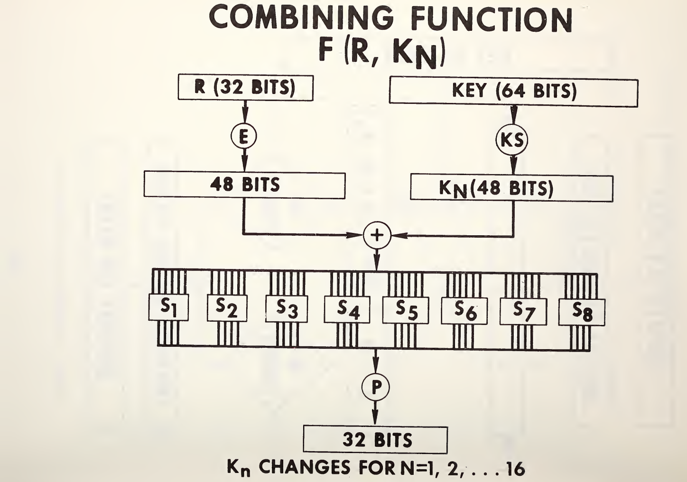
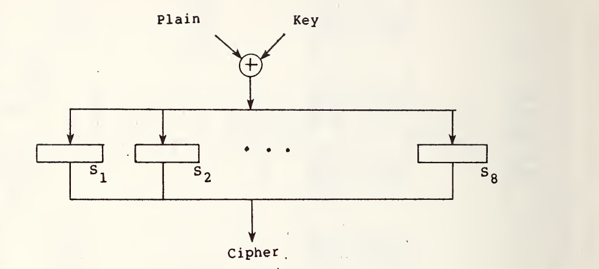
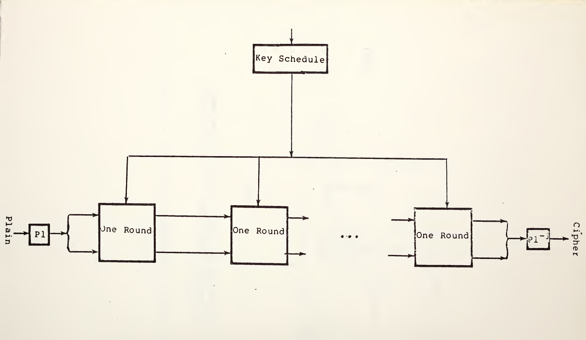

NIST IR 1291 日本語訳
英語タイトル : Report of the Workshop on Cryptography in Support of Computer Security日本語タイトル : コンピューターセキュリティを支える暗号技術に関するワークショップの報告書
公開日 : 1977-09-01
原文URL : https://csrc.nist.gov/pubs/ir/1291/final
原本 PDF : https://doi.org/10.6028/NBS.IR.77-1291
訳文 : 有志による非公式の日本語訳（AI による翻訳とレビュー）。全 395 段落のうち 394 段落を翻訳済み（原文取得日 : 2026-10-31）
[要約] NIST IR 1291 は、1976 年 9 月 21 日と 22 日に米国標準局（NBS）で開かれた、コンピューターセキュリティを支える暗号技術に関するワークショップの報告書です。このワークショップは、提案されていたデータ暗号化標準（DES）の数学的・統計的な特性を、コンピューターセキュリティとの関係で専門家に意見を求めるために開かれました。連邦政府、産業界、大学から 42 名が参加し、導入、並行する作業部会、要約の 3 つの時間帯に分けて進められ、目的は DES の数学的・統計的特性の分析、潜在的な弱点を特定する場の提供、鍵の生成と配布の手順の策定でした。報告書は、行われた発表の要約、提起された主要な論点の概要、記録のために述べられた発言の引用を示し、出された主要な質問のいくつかにも答えています。
NBSIR 77-1291
NBSIR 77-1291
Report of the Workshop on Cryptography in Support of Computer Security
コンピューターセキュリティを支える暗号技術に関するワークショップの報告書
Held at the National Bureau of Standards September 21-22, 1976
1976 年 9 月 21〜22 日に米国標準局（NBS）で開催
Dennis Branstad Jason Gait Stuart Katzke
Dennis Branstad Jason Gait Stuart Katzke
Systems and Software Division Institute for Computer Sciences and Technology National Bureau of Standards Washington, D. C. 20234
システム・ソフトウェア部門 計算機科学技術研究所 米国標準局 ワシントン D. C. 20234
September 1977
1977 年 9 月
U.S. DEPARTMENT OF COMMERCE
米国商務省
NATIONAL BUREAU OF STANDARDS
米国標準局
NBSIR 77-1291
NBSIR 77-1291
REPORT OF THE WORKSHOP ON CRYPTOGRAPHY IN SUPPORT OF COMPUTER SECURITY
コンピューターセキュリティを支える暗号技術に関するワークショップの報告書
Held at the National Bureau of Standards September 21-22, 1976
1976 年 9 月 21〜22 日に米国標準局（NBS）で開催
Dennis Branstad Jason Gait Stuart Katzke
Dennis Branstad Jason Gait Stuart Katzke
Systems and Software Division Institute for Computer Sciences and Technology National Bureau of Standards Washington, D. C. 20234
システム・ソフトウェア部門 計算機科学技術研究所 米国標準局 ワシントン D. C. 20234
September 1977
1977 年 9 月
U.S. DEPARTMENT OF COMMERCE, Juanita M. Kreps, Secretary
米国商務省、Juanita M. Kreps、長官
Dr. Sidney Harman, Under Secretary
Dr. Sidney Harman 次官
Jordan J. Baruch, Assistant Secretary for Science and Technology
Jordan J. Baruch 科学技術担当次官補
NATIONAL BUREAU OF STANDARDS, Ernest Ambler, Acting Director
米国標準局（NBS） Ernest Ambler 局長代行
LIST OF FIGURES
図の一覧
Page
ページ
1.1. Flowchart of the DES algorithm
1.1. DES アルゴリズムのフローチャート
2.2. Details of the f-Function
2.2. f 関数の詳細
3.3. Sample S-box
3.3. S ボックスの例
4.4. Parallel Connection of S-boxes
4.4. S ボックスの並列接続
5.5. Details of One Round
5.5. 1 ラウンドの詳細
6.6. Series Connection of Rounds
6.6. ラウンドの直列接続
7.7. Power Spectrum of Output of DES
7.7. DES の出力のパワースペクトル
Report of the Workshop on Cryptography in Support of Computer Security
コンピューターセキュリティを支える暗号技術に関するワークショップの報告書
Held at the National Bureau of Standards September 21-22, 1976
1976 年 9 月 21〜22 日に米国標準局（NBS）で開催
Dennis Branstad Jason Gait Stuart Katzke
Dennis Branstad Jason Gait Stuart Katzke
This publication reports on the Workshop on Cryptography in Support of Computer Security held at the National Bureau of Standards on September 21-22, 1976. The workshop was organized to obtain expert opinions on the mathematical and statistical characteristics of the proposed Data Encryption Standard (DES) as it relates to computer security. This report summarizes formal presentations that were made, outlines major issues that were raised, quotes statements that were made for the record and answers several of the major questions that were asked.
本書は、1976 年 9 月 21〜22 日に米国標準局（NBS）で開催された「コンピューターセキュリティを支える暗号技術に関するワークショップ」を報告するものです。このワークショップは、提案されたデータ暗号化標準（DES）の数学的・統計的な特性について、コンピューターセキュリティとの関わりの観点から専門家の意見を得るために組織されました。本報告書は、行われた正式な発表を要約し、提起された主要な論点を概説し、記録のために述べられた発言を引用し、出された主要な質問のいくつかに回答するものです。
Key words: Cryptanalysis ; cryptography; encryption; key management; known plaintext attack; security; work factor.
キーワード: 暗号解読、暗号技術、暗号化、鍵管理、既知平文攻撃、セキュリティ、作業係数。
1. EXECUTIVE SUMMARY
1. エグゼクティブサマリー
1.1 Organization
1.1 構成
1. The workshop was divided into three time periods: introduction, parallel working sessions, and summary.
1. ワークショップは、導入、並行する作業セッション、まとめの 3 つの時間帯に分けられました。
2. A total of 42 people attended from the Federal Government, industry and universities.
2. 連邦政府、産業界、大学から合計 42 人が参加しました。
3. The workshop chairman was Professor Julian Bigelow, the Mathematics group leader was Dr. Howard Campaigne and the Applications group leader was Dr. Joseph Eachus.
3. ワークショップの議長は Julian Bigelow 教授、数学グループのリーダーは Dr. Howard Campaigne、応用グループのリーダーは Dr. Joseph Eachus でした。
1.2 Introductory Session
1.2 導入セッション
1. The purposes of the introductory session were to introduce the objectives of the workshop, i.e., to analyze the mathematical and statistical characteristics of the proposed Data Encryption Standard (DES); to provide a forum for identifying potential weaknesses of the DES; and to develop procedures for generating and distributing keys.
1. 導入セッションの目的は、ワークショップの目標、すなわち、提案されたデータ暗号化標準（DES）の数学的・統計的特性を分析すること、DES の潜在的な弱点を特定する場を設けること、そして鍵を生成・配布する手順を策定することを紹介することでした。
2. Individual participants presented a description of the DES,the results of a previous NBS sponsored workshop on technology affecting the DES, and preliminary analysis of the DES.
2. 個々の参加者が、DES の説明、DES に影響する技術に関する NBS 主催の先行ワークショップの結果、および DES の予備的な分析を発表しました。
3. Professor Martin Hellman, of Stanford University, presented a prepared statement.
3. Stanford University の Martin Hellman 教授が、準備した声明を発表しました。
4. Mr. John Scantlin, of the Lexar Corp., submitted for distribution a written paper which analyzed the DES.
4. Lexar Corp. の John Scantlin 氏が、DES を分析した文書を配布用に提出しました。
1.3 Mathematics Working Group
1.3 数学作業部会
1. The mathematics working group discussed potential weaknesses of the DES, such as the limitations in key length, the non-random structure of the S-boxes, and possible vulnerabilities to less than exhaustion atacks.
1. 数学作業部会は、DES の潜在的な弱点として、鍵長の制約、S ボックスの非ランダムな構造、全数探索に満たない攻撃に対する脆弱性の可能性などを議論しました。
2. Some participants felt that the 56-bit key was too short against high- technology, high cost attack. One assertion was made that the algorithm could be sucessfully attacked for a cost of $20 million. It was pointed out that the first workshop on technology included estimates that the actual cost of building a key-extraction machine would be at least $72 million, the completion date would be 1990, the exhaustion time would be approximately 20 hours, and the probability of success would be low. One participant stated that his personal estimate of the cost (actual cost of production to a manufacturer) to build such a machine would be on the order of $200 million, could not be delivered until at least 1981, would produce 1 key per day, would have a low probability of success and that such a machine would never be built. Claims were made that the cost would decrease by an order of magnitude every five years. The general response was that in spite of this the key was satisfactory for all security requirements of economic data (money transfers, proprietary data) and that using the algorithm serially (cascading two chips) satisfied all security requirements for data protected by the proposed DES.
2. 一部の参加者は、56 ビットの鍵は、高度な技術を用いた高費用の攻撃に対しては短すぎると考えました。このアルゴリズムは 2,000 万ドルの費用で攻撃に成功しうるという主張もありました。第 1 回の技術に関するワークショップでは、鍵抽出マシンを実際に製作する費用は少なくとも 7,200 万ドル、完成は 1990 年、全数探索に要する時間は約 20 時間、成功の確率は低いという見積りが含まれていたことが指摘されました。ある参加者は、そのようなマシンを製作する費用（製造者にとっての実際の製造原価）は個人的な見積りで 2 億ドル程度、納入は早くても 1981 年、鍵を 1 日に 1 個得られる程度で、成功の確率は低く、そのようなマシンは決して作られないだろうと述べました。費用は 5 年ごとに 1 桁ずつ下がるという主張もありました。これに対する一般的な応答は、そうであっても、この鍵は経済データ（資金移動、専有データ）に関するあらゆるセキュリティ要件を満たしており、アルゴリズムを直列に使用すれば（2 つのチップをカスケード接続すれば）、提案された DES で保護されるデータに関するあらゆるセキュリティ要件を満たす、というものでした。
3. There was a concern that S-boxes were non-random and the designer stated this to be true. When reasons for the choice of non-random S-boxes were requested, the designer stated:
3. S ボックスが非ランダムであることへの懸念があり、設計者はそれが事実であると述べました。非ランダムな S ボックスを選んだ理由を尋ねられた設計者は、次のように述べました。
•a. Non-random entries were necessary to provide security.
•a. セキュリティを確保するには、非ランダムな要素が必要でした。
•b. The design criteria, independently derived, coincided with some that were classified and the designers agreed not to make them public.
•b. 独自に導き出した設計基準が、機密指定されている基準の一部と一致していたため、設計者はそれらを公開しないことに同意しました。
•c. Of the possible good S-boxes, these were chosen to minimize combinatorial logic.
•c. 良好な S ボックスの候補の中から、組合せ論理が最小になるものを選びました。
•d. The draft DES, published by NBS, was exactly as designed and submitted.
•d. NBS が公表した DES の草案は、設計され提出されたとおりのものでした。
4. The acceptability of having a standard based on classified criteria was questioned. Instances were given of some standards based on such criteria (DOD, AEC). The consensus of group was that the DES was completely and uniquely specified for implementation.
4. 機密指定された基準に基づく標準が受け入れられるかどうかが問われました。そのような基準に基づく標準の例（DOD、AEC）が挙げられました。グループの合意は、DES は実装のために完全かつ一意に規定されている、というものでした。
5. A question was raised regarding the acceptability of having a standard based on criteria potentially favorable to one manufacturer. The designer stated that the minimization criteria are obvious to any logic designer choosing to implement S-boxes in boolean logic.
5. 特定の 1 つの製造者に有利になりうる基準に基づく標準が受け入れられるかどうかについて質問が出ました。設計者は、S ボックスをブール論理で実装しようとする論理設計者なら、最小化の基準は自明であると述べました。
6. The following characteristic of the algorithm was demonstrated: E(k, p) = c and E(-k, -p) = -c; i. e., enciphering plaintext with a key produces ciphertext and enciphering the complement of the plaintext with the complement of the key produces the complement of the ciphertext. It was asserted that this characteristic would reduce the work factor of "breaking the algorithm" by 50%. It was pointed out that not only must matched ciphertext for known plaintext be obtained but also matched ciphertext for the complement of the known plaintext. Further, although the number of keys that must be tested with the DES algorithm is reduced by a factor of two, each resultant ciphertext must be compared with both the ciphertext corresponding to the given plaintext and the complement of the ciphertext corresponding to the complemented plaintext. Thus the net savings will be less than 50%.
6. このアルゴリズムの次の特性が示されました。E(k, p) = c かつ E(-k, -p) = -c です。すなわち、鍵で平文を暗号化すると暗号文が得られ、平文の補数を鍵の補数で暗号化すると暗号文の補数が得られます。この特性により、「アルゴリズムを破る」ための作業係数が 50% 減ると主張されました。これに対し、既知の平文に対応する暗号文が得られるだけでなく、既知の平文の補数に対応する暗号文も得られなければならないことが指摘されました。さらに、DES アルゴリズムで試さなければならない鍵の数は 2 分の 1 になるものの、得られた各暗号文を、与えられた平文に対応する暗号文と、補数にした平文に対応する暗号文の補数との両方と比較しなければなりません。したがって、正味の節約は 50% に満たないことになります。
7. A participant stated that the initial permutation and its inverse added no security to the algorithm. The designer stated that every logic element and wire contributed to the security of the algorithm.
7. ある参加者は、初期転置とその逆転置はアルゴリズムにセキュリティを何も加えないと述べました。設計者は、すべての論理素子と配線がアルゴリズムのセキュリティに寄与していると述べました。
8. Questions were raised concerning the amount of testing of the algorithm that had been done. The designer stated that 17 man-years of effort had been expended in analysis, gave references to five consultants who aided in analysis, and said that no short cuts in cryptanalysis had been found.
8. アルゴリズムに対して行われた試験の量について質問が出ました。設計者は、分析に 17 人年の労力を費やしたこと、分析を支援した 5 人のコンサルタントを挙げたこと、そして暗号解読の近道は見つかっていないことを述べました。
9. The discussants attempted to identify less than exhaustion attacks on the algorithm without success.
9. 討論者たちは、このアルゴリズムに対する全数探索に満たない攻撃を特定しようと試みましたが、成功しませんでした。
10. The representative of the Commission on Electronic Fund Transfer stated that as a result of his attending the two workshops, he planned to recommend the use of the proposed standard in electronic funds transfer applications.
10. 電子資金移動委員会（Commission on Electronic Fund Transfer）の代表は、2 回のワークショップに出席した結果、電子資金移動の用途で提案された標準の使用を勧告するつもりであると述べました。
1.4 Applications Working Group
1.4 応用作業部会
1. The emphasis was on key generation and distribution. The consensus was that potential security problems would be the loss or misuse of keys rather than analysis of the algorithm.
1. 重点は鍵の生成と配布に置かれました。合意されたのは、セキュリティ上の問題となりうるのは、アルゴリズムの解析よりも鍵の紛失や誤用であるということでした。
2. Keys should be distributed independently of the communication system they are protecting.
2. 鍵は、保護の対象となる通信システムとは独立に配布すべきです。
3. NBS should publish guidelines for key distribution and usage at a detail useful to the user but not so detailed that potential penetrators could "track" key utilization.
3. NBS は、鍵の配布と使用に関するガイドラインを、利用者にとって有用である一方、侵入を試みる者が鍵の使用状況を「追跡」できるほど詳細ではない水準で公表すべきです。
4. Complex keys, consisting of subelements from independent sources, should be considered for use in cryptographic systems.
4. 独立した出所に由来する部分要素から成る複合鍵を、暗号システムで使用することを検討すべきです。
1.5 Summary Session
1.5 まとめのセッション
1. On key length, it was concluded that a 48 bit key is too short for most applications. A 56 bit key is adequate at present for business applications; a longer key would provide more security.
1. 鍵長については、48 ビットの鍵はほとんどの用途で短すぎると結論されました。56 ビットの鍵は現時点では業務用途には十分であり、より長い鍵であればより高いセキュリティが得られます。
2. The benefits, costs and threats of encryption should be defined.
2. 暗号化の利点、費用、脅威を定義すべきです。
3. An analysis and statement of strength of the DES should be made. If an analysis would result in deriving 8-10 bits of key, it should be considered significant if derived mathematically or statistically. The range of the number of bits considered significant by individual participants was 3-20 bits. The 8-10 bit range represents the consensus. A reduction of 1-2 bits was not considered significant.
3. DES の強度について分析を行い、その結果を明記すべきです。分析によって鍵の 8〜10 ビットが導出できる場合、それが数学的または統計的に導出されたものであれば、重大とみなすべきです。個々の参加者が重大とみなすビット数の範囲は 3〜20 ビットでした。8〜10 ビットの範囲が合意を表しています。1〜2 ビットの減少は重大とはみなされませんでした。
4. Attack on the economic system of the U. S. by foreign subversive elements should be considered in utilizing all security measures, including encryption.
4. 外国の破壊的な勢力による米国の経済システムへの攻撃を、暗号化を含むあらゆるセキュリティ対策の利用において考慮すべきです。
5. Work should continue on developing a replacement encryption standard for either simpler software implementation or improved security against projected future threats.
5. より単純なソフトウェア実装、または将来予想される脅威に対するセキュリティの向上のために、代替となる暗号化標準を開発する作業を継続すべきです。
6. Some participants felt that since the design principles of the S-boxes were independently discovered, they should be publishable even though they are considered classified.
6. 一部の参加者は、S ボックスの設計原理は独立に発見されたのだから、機密指定されているとしても公表できるはずだと考えました。
7. Assertions were made that S-boxes should contain the exclusive-or combination of S-boxes chosen by NBS, the designer of the algorithm and IEEE.
7. S ボックスには、NBS、アルゴリズムの設計者、IEEE が選んだ S ボックスの排他的論理和の組合せを含めるべきだという主張がありました。
8. It was agreed that the S-box entries were not selected at random but were chosen according to some unspecified criteria. Most of the participants accepted the designers explanation that this was done to strengthen rather than weaken the algorithm.
8. S ボックスの要素は無作為に選ばれたのではなく、明示されていない何らかの基準に従って選ばれたことが了解されました。大半の参加者は、これはアルゴリズムを弱めるためではなく強めるために行われたという設計者の説明を受け入れました。
9. The consensus was that the DES should be adopted as a standard at this time but that work should continue in demonstrating or disproving the strength of DES. No suggestions of who should do the work or how it should be funded were made.
9. DES を現時点で標準として採用すべきです。ただし、DES の強度を実証または反証する作業は継続すべきです。誰がその作業を行うべきか、どのように資金を確保するかについての提案はありませんでした。
10. NBS agreed to prepare responses to questions raised during the workshop (see attachment 8.4).
10. NBS は、ワークショップ中に提起された質問への回答を用意することに同意しました（付属書 8.4 を参照）。
2. OVERVIEW
2. 概要
The workshop began with a number of introductory comments and brief presentations. Professor Julian Bigelow, Institute for Advanced Studies at Princeton, welcomed the participants to the workshop and outlined the workshop objectives. Dr. Ruth Davis, Director of the Institute for Computer Sciences and Technology, gave an overview of the development process of the proposed Data Encryption Standard (DES). Technical presentations by ICST members and other workshop participants provided descriptions of the DES and how it may be used in computer systems.
ワークショップは、いくつかの冒頭挨拶と短い発表で始まりました。Princeton の Institute for Advanced Studies の Julian Bigelow 教授が参加者を歓迎し、ワークショップの目標を概説しました。計算機科学技術研究所（ICST）所長の Dr. Ruth Davis が、提案されたデータ暗号化標準（DES）の策定過程の概要を説明しました。ICST の職員やその他のワークショップ参加者による技術発表では、DES と、コンピューターシステムでの利用方法が説明されました。
The objective of the mathematics working group was to identify and analyze potential weaknesses of the DES algorithm. The prime arguments centered around the length of the key and the structure of the substitution boxes (S boxes). The first argument reiterated the concern that a 56-bit key length was inadequate to prevent a key exhaustion attack against the algorithm for the next 10-20 years. While the results of the Workshop on Estimation of Significant Advances in Computer Technology, devoted to this issue, showed that the cost and feasibility of using today's technology, or that expected in the next 10-15 years, did not support the foundation of this concern, the issue was discussed at length. The second argument concerned the apparent structure in the eight S-boxes of the algorithm and the reason for this structure.
数学作業部会の目的は、DES アルゴリズムの潜在的な弱点を特定し、分析することでした。主な論点は、鍵の長さと置換ボックス（S ボックス）の構造に集中しました。第一の論点は、56 ビットの鍵長では、今後 10〜20 年にわたってアルゴリズムに対する鍵の全数探索攻撃を防ぐのに不十分であるという懸念の繰り返しでした。この問題に充てられた「コンピューター技術における重要な進歩の見積りに関するワークショップ」の結果は、現在の技術、または今後 10〜15 年に見込まれる技術の費用と実現可能性は、この懸念の根拠を裏づけないことを示していましたが、この問題は長時間にわたって議論されました。第二の論点は、アルゴリズムの 8 つの S ボックスに見られる明らかな構造と、その構造の理由に関するものでした。
These arguments were not completely resolved. It was felt that the proposed DES was adequate in its simplest form for normal business applications and could be used in series (cascaded) to provide a higher level of security whenever the application or technology warranted it. It was felt that if a mathematical attack on the algorithm existed which provided a method for deriving a number of bits (8-10 were felt significant), it could be used in conjunction with an exhaustion attack to reduce the security of the algorithm. However, no such attack was formulated and no such method is known to exist. A demonstration of a characteristic of the algorithm which complements (in a mathematical sense) the output if all the inputs are complemented was given. This could be used to reduce the security of the algorithm to an effective 55-bit key if a penetrator is allowed to choose the plaintext and has knowledge of the resulting ciphertext.
これらの論点は完全には解決されませんでした。提案された DES は、最も単純な形であれば通常の業務用途には十分であり、用途や技術上必要な場合には、直列に（カスケード接続して）使用することでより高い水準のセキュリティを提供できると考えられました。アルゴリズムに対する数学的な攻撃が存在し、一定のビット数（8〜10 ビットが重大と考えられました）を導出する方法が得られるのであれば、それを全数探索攻撃と組み合わせて、アルゴリズムのセキュリティを低下させることができると考えられました。しかし、そのような攻撃は定式化されておらず、そのような方法が存在することも知られていません。すべての入力を補数にすると、出力も（数学的な意味で）補数になるというアルゴリズムの特性が示されました。侵入者が平文を選ぶことができ、その結果の暗号文を知っている場合、この特性により、アルゴリズムのセキュリティは実効 55 ビットの鍵相当まで低下しうるとされました。
It was determined that the S-boxes indeed had structure. They had been selected by the designer of the algorithm from all possible 4x16 matrices, the rows of which are permutations of the integers 0 to 15. The cryptographic characteristics selected by the designer happened to coincide with some that were considered classified and the designer agreed not to publicly describe them. A question on the propriety of a standard based on a classified design was raised. It was agreed that the algorithm itself was completely described and could be implemented and used but that independent verification of the security of the algorithm would be easier if the design criteria were published. One participant had analyzed the structure of the S-boxes and concluded that the structure did not provide any cryptographic weakness that he could identify but might be similar to the structure that might hide a trap- door. The designer stated that no trap-door had been designed into the algorithm, no accidental one was discovered after 17 man years of analysis and none was felt to exist.
S ボックスには確かに構造があることが確認されました。S ボックスは、アルゴリズムの設計者が、行が整数 0〜15 の順列になっているすべての 4×16 行列の中から選んだものでした。設計者が選んだ暗号上の特性は、たまたま機密指定されているものの一部と一致しており、設計者はそれらを公に説明しないことに同意しました。機密指定された設計に基づく標準が適切かどうかという疑問が提起されました。アルゴリズム自体は完全に記述されており、実装して使用できるものの、設計基準が公表されていれば、アルゴリズムのセキュリティを独立に検証することはより容易になるという点で、意見が一致しました。ある参加者は S ボックスの構造を分析し、自分には特定できる暗号上の弱点はその構造から見つからなかったものの、トラップドアを隠す構造に似ているかもしれないと結論しました。設計者は、アルゴリズムにトラップドアは設計されておらず、17 人年に及ぶ分析でも偶発的なトラップドアは発見されず、存在するとも考えていないと述べました。
The objectives of the applications working group were concerned with investigating methods of generating and distributing encryption keys, protecting them, and utilizing the DES in various applications. It was felt that the keys must not only be protected against unauthorized use but also must be protected against destruction and unavailability for authorized use. Keys must be distributed, at least in part, outside the system that they are protecting. The consensus was that the potential security problems with the DES would be loss or misuse of keys rather than analysis of the algorithm or exhaustive techniques of deriving a key. It was suggested that complex keys (consisting of subelements distributed through independent channels and combined only during usage) should be considered for use in cryptographic systems.
応用作業部会の目的は、暗号化鍵を生成し配布する方法、鍵を保護する方法、およびさまざまな用途での DES の利用を調査することでした。鍵は、無許可の使用から保護しなければならないだけでなく、破壊や、許可された使用のために利用できなくなることからも保護しなければならないと考えられました。鍵は、少なくとも一部は、保護の対象となるシステムの外部で配布しなければなりません。合意されたのは、DES に関してセキュリティ上の問題となりうるのは、アルゴリズムの解析や鍵を導出する全数探索的な手法よりも、鍵の紛失や誤用であるということでした。複合鍵（独立した経路で配布され、使用時にだけ組み合わされる部分要素から成る鍵）を、暗号システムで使用することを検討すべきです。
3. INTRODUCTORY SESSION, SEPTEMBER 21
3. 導入セッション（9 月 21 日）
For convenience and clearness of describing the events at the workshop, the write up is divided into separate sections for each of the two days. Each section is further divided into a description of the formal presentations followed by the resulting discussions.
ワークショップの出来事を分かりやすく記述するため、記録は 2 日間のそれぞれについて別々の節に分けています。各節はさらに、正式な発表の説明と、それに続く討論に分けています。
3.1 Summaries of Presentations, September 21
3.1 発表の要約（9 月 21 日）
The workshop session was opened by the chairman, Professor Julian Bigelow, of the Institute for Advanced Studies at Princeton, New Jersey. Professor Bigelow's introductory remarks dealt with the overall purpose of the workshop, set it in the context of the introduction and adoption of a Data Encryption Standard and set forward the overall format for the various sessions of the workshop.
ワークショップのセッションは、New Jersey の Princeton にある Institute for Advanced Studies の議長 Julian Bigelow 教授によって開会されました。Bigelow 教授の冒頭の発言は、ワークショップ全体の目的を扱い、データ暗号化標準の導入と採用という文脈にワークショップを位置づけ、ワークショップの各セッションの全体的な形式を示すものでした。
BIGELOW: The purpose of this workshop is to explore the general area of encryption technology as it relates to the data encryption standard that has been proposed by the National Bureau of Standards. For our purposes we will not be concerned with the specific hardware aspects of the problem, i. e., the details of the introduction of cryptographic equipment into computer systems, existing or future, but with the effectiveness of the encryption algorithm in the proposed data encryption standard, i. e., the question of whether the proposed standard has any logical "gaps, " or weaknesses that are concealed from the cursory view of the cryptanalytically unsophisticated.
BIGELOW: このワークショップの目的は、米国標準局が提案しているデータ暗号化標準に関連して、暗号化技術の全般的な領域を検討することです。ここでは、問題のハードウェアに固有の側面、すなわち、既存または将来のコンピューターシステムに暗号装置を導入する際の詳細は扱いません。扱うのは、提案されたデータ暗号化標準における暗号化アルゴリズムの有効性、すなわち、提案された標準に、暗号解読の素養のない者の簡単な目では見えない論理上の「欠落」や弱点がないかという問題です。
We should consider in detail two pertinent issues in this area: the first of these is whether there exists an inversion technique, of a purely mathematical nature, that would permit the recovery of the key purely from a knowledge of the form of the algorithm, the possession of some quantity of ciphertext and perhaps the possession of matched plaintext as well; next, we need to explore the use of known tools and techniques, such as statistical analysis, which might have the potential of providing concrete information about the relationship between ciphertext and key, or between matched plaintext-ciphertext and key. We need to realize, taking a realistic and practical view, the very real difficulties we face in attempting to prove things about encryption algorithms...the significant aspects of the problem are mathematically non-linear and all such problems are very difficult. Finally, we are not here to deal with the specific threat of brute force methods of breaking encryption algorithms...this aspect has been adequately and competently dealt with in a previous workshop which investigated the practical aspects of constructing a hardware device which would rapidly perform the necessary computations required in this attack. We shall hear a report of the findings of this workshop.
この領域では、関連する 2 つの論点を詳細に検討すべきです。1 つ目は、アルゴリズムの形式の知識、ある程度の量の暗号文の入手、そしておそらくは対応する平文の入手だけから、純粋に数学的な性質の反転手法によって鍵を復元できるかどうかです。次に、暗号文と鍵の関係、または対応する平文・暗号文の組と鍵の関係について、具体的な情報をもたらしうる統計的分析など、既知の道具や手法の使用を検討する必要があります。現実的で実際的な見方をとれば、暗号化アルゴリズムについて何かを証明しようとする際に私たちが直面する困難は、非常に現実的なものだと認識する必要があります。問題の重要な側面は数学的に非線形であり、そのような問題はすべて非常に困難です。最後に、私たちは、暗号化アルゴリズムを破るための総当たり法という具体的な脅威を扱うためにここにいるのではありません。この側面は、この攻撃に必要な計算を高速に実行するハードウェア装置を構築する実際的な側面を調査した先行ワークショップで、十分かつ適切に扱われています。このワークショップの調査結果の報告をお聞きいただきます。
We will proceed during the course of the afternoon with a number of presentations whose purpose is to familiarize us with the details of how the DES algorithm works and perhaps some aspects of analytical approaches to gaining information about its underlying structure. Tomorrow, we will break up into two working groups in order to explore in some detail two important areas of interest. The mathematics working group, headed by Dr. Howard Campaigne, will deal with the strictly mathematical aspects of the algorithm, especially from a cryptanalytic point of view. The applications working group, headed by Dr. Joseph Eachus, will deal with the very practical areas of key generation, usage, and distribution that are so important in the day-to-day use of an encryption scheme.
午後は、DES アルゴリズムがどのように動作するかの詳細と、その基礎構造に関する情報を得るための分析的アプローチのいくつかの側面に慣れていただくことを目的とした発表を、いくつか進めます。明日は、2 つの重要な関心領域を詳しく検討するため、2 つの作業部会に分かれます。Dr. Howard Campaigne が率いる数学作業部会は、とくに暗号解読の観点から、アルゴリズムの厳密に数学的な側面を扱います。Dr. Joseph Eachus が率いる応用作業部会は、暗号化方式の日常的な使用において非常に重要となる、鍵の生成、使用、配布という非常に実際的な領域を扱います。
Following Professor Bigelow's introduction, Dr. Ruth Davis, Director of the Institute for Computer Sciences and Technology, welcomed the participants, thanked them for their participation and outlined briefly the history of the NBS involvement with the Data Encryption Standard, the purpose of the standard and the anticipated contribution of the workshop.
Bigelow 教授の冒頭の発言に続いて、計算機科学技術研究所（ICST）所長の Dr. Ruth Davis が、参加者を歓迎し、参加への謝意を述べ、NBS がデータ暗号化標準に関わってきた経緯、標準の目的、およびワークショップに期待される貢献を簡潔に説明しました。
DAVIS: It has long been recognized that a publicly available encryption technique was needed to protect data as it is stored in a computer or transmitted from one computer to another. To this end NBS has been working on a data encryption standard since 1972. The purpose of the standard is to provide a uniform technique for all Federal agencies to use. It is not intended to be universally applied wherever data is stored or transmitted within the United States. In selecting a candidate for a standard, NBS twice solicited in the Federal Register and selected the algorithm that best satisfied the requirements of a standard from among those submitted. In establishing a standard, the encryption algorithm is not left in vacuo. It will be embedded in a framework of guidelines that recommend procedures and environments in which the algorithm is used as only one part of an overall security system. We are now working on developing such guidelines. We feel that the vulnerability of computer systems to risk has been, and will be more so in the future, substantively reduced by our efforts in this area.
DAVIS: コンピューターに保存されたり、コンピューター間で伝送されたりするデータを保護するために、公に利用可能な暗号化技術が必要であることは、以前から認識されていました。このため、NBS は 1972 年からデータ暗号化標準に取り組んできました。この標準の目的は、すべての連邦機関が使用できる統一的な技術を提供することです。米国内でデータが保存または伝送されるあらゆる場所に一律に適用することは意図していません。標準の候補を選ぶにあたり、NBS は Federal Register で 2 度公募を行い、提出されたものの中から標準の要件を最もよく満たすアルゴリズムを選びました。標準を確立する際、暗号化アルゴリズムは単独で置かれるわけではありません。アルゴリズムを全体的なセキュリティシステムの一部にすぎないものとして使用する手順と環境を勧告するガイドラインという枠組みに組み込まれます。現在、私たちはそのようなガイドラインの策定に取り組んでいます。この領域での私たちの取組みにより、コンピューターシステムのリスクに対する脆弱性は、これまでも実質的に低減されてきましたし、将来はさらに低減されると考えています。
A good deal of our work towards developing a standard was in conjunction with other Federal agencies who will be the actual users of the standards and guidelines that we produce. This work has been difficult and tedious, but necessary and rewarding because it keeps us in close contact with those who have the deepest, most abiding interest in the standard, and in using the standard in an efficient and cost effective way. Once a standard is established, we continually monitor its use by maintaining contact with the agencies. There is, as well, an automatic review proceedure at five year intervals which provides for the evaluation of the continued effectiveness and efficiency of a standard.
標準を策定する作業の多くは、私たちが作成する標準とガイドラインの実際の利用者となる他の連邦機関と協力して行いました。この作業は困難で骨の折れるものでしたが、標準と、その効率的で費用対効果の高い使用に最も深く持続的な関心を持つ人々と緊密に連絡を保てるため、必要であり、やりがいのあるものでした。標準が確立された後は、各機関と連絡を保つことで、その使用状況を継続的に監視します。また、5 年ごとの自動的な見直し手続があり、標準が引き続き有効かつ効率的であるかが評価されます。
Dr. Dennis Branstad, of the Institute for Computer Sciences and Technology, described the proposed data encryption standard to the group.
計算機科学技術研究所（ICST）の Dr. Dennis Branstad が、提案されたデータ暗号化標準をグループに説明しました。
BRANSTAD: (An overview of the cryptographic algorithm specified in the proposed Data Encryption Standard was made. Figures 1-3 were used to describe the iterative process of the DES algorithm and the structure of the substitution boxes in the enciphering function).
BRANSTAD: （提案されたデータ暗号化標準に規定された暗号アルゴリズムの概要が説明されました。DES アルゴリズムの反復過程と、暗号化関数における置換ボックスの構造を説明するために、図 1〜3 が使用されました。）
Figure 1 is a flow diagram of the sixteen iterations, or "rounds", of the algorithm. Sixty four bits of input are enciphered under control of the sixty four bit key (56 bits are actively used in the algorithm and 8 are used for error detection in the entered key) and a sixty four bit cipher is produced. The structure of the algorithm is such that half of the input is used to generate a pseudo-random 32-bit binary number which is exclusive-ored (XORed) with the other half. The halves are then switched and the operation repeated sixteen times. The input is preprocessed with an initial fixed permutation and the result is postprocessed with the inverse of the initial permutation before output. Use of the algorithm results in a 64-bit output in which every bit of the output depends on every bit of the input and every bit of the 56-bit active key.
図 1 は、アルゴリズムの 16 回の反復、すなわち「ラウンド」を示すフロー図です。64 ビットの入力が、64 ビットの鍵の制御のもとで暗号化され（56 ビットがアルゴリズムで実際に使用され、8 ビットは入力された鍵の誤り検出に使用されます）、64 ビットの暗号文が生成されます。アルゴリズムの構造は、入力の半分を使って擬似ランダムな 32 ビットの 2 進数を生成し、それをもう半分と排他的論理和（XOR）をとる形になっています。その後、両半分を入れ替えて、この操作を 16 回繰り返します。入力は固定の初期転置で前処理され、結果は出力前に初期転置の逆転置で後処理されます。このアルゴリズムを使うと 64 ビットの出力が得られ、出力のすべてのビットが、入力のすべてのビットと、56 ビットの有効な鍵のすべてのビットに依存します。
Figure 2 shows the mathematical combining function F which uses the 32-bit right half of the input and a 48-bit subset of the 56-bit active key to produce a pseudo-random 32-bit binary number. The algorithm is structured so that neither the key nor the input are derivable from the output after the sixteen rounds are completed. The function E expands the 32-bit number to a 48-bit number by copying specified bits twice. The operation KS is a key selection of 48 bits from the active 56 bits. The bits are selected so that each of the 56 active bits are used between 12 and 15 times during the 16 rounds. The two 48-bit numbers are XORed together and the result enters the 8 substitution boxes (S boxes). The first 6 bits enter S1, the second 6 bits enter S2, etc. Each S box contains 64 entries of 4 bits each. The 6-bit entry is used as an index into the S box tables and the 4-bit quantity is substitued as output of the S box operation. The contents of each S box are different. Several different methods may be used in implementing the S boxes but they are described as tables having 4 rows and 16 columns. The eight 4-bit results are then permuted according to a fixed permutation P and the resulting 32-bit number is the pseudo-random number described in Figure 1.
図 2 は、入力の 32 ビットの右半分と、56 ビットの有効な鍵の 48 ビットの部分集合を用いて、擬似ランダムな 32 ビットの 2 進数を生成する数学的な結合関数 F を示しています。アルゴリズムは、16 ラウンドが完了した後の出力から、鍵も入力も導出できないように構成されています。関数 E は、指定されたビットを 2 回ずつ複写することで、32 ビットの数を 48 ビットの数に拡張します。操作 KS は、有効な 56 ビットから 48 ビットを選ぶ鍵選択です。ビットは、56 個の有効なビットのそれぞれが、16 ラウンドの間に 12〜15 回使用されるように選ばれます。2 つの 48 ビットの数は XOR され、その結果が 8 つの置換ボックス（S ボックス）に入ります。最初の 6 ビットは S1 に、次の 6 ビットは S2 に、というように入ります。各 S ボックスは、それぞれ 4 ビットの 64 個の要素を含みます。6 ビットの入力は S ボックスの表への索引として使われ、4 ビットの値が S ボックス操作の出力として置換されます。各 S ボックスの内容はそれぞれ異なります。S ボックスの実装にはいくつかの異なる方法を使えますが、4 行 16 列の表として記述されます。次に、8 つの 4 ビットの結果は固定の転置 P に従って転置され、結果の 32 ビットの数が、図 1 に示された擬似ランダムな数になります。
Figure 3 shows a sample selection function (S box) and how the 6-bit input is used. The outer 2 bits are used as a row index and the inner 4 bits are used as a column index. The entries are shown as decimal numbers in the range 0-15 in each row.
図 3 は、選択関数（S ボックス）の例と、6 ビットの入力の使われ方を示しています。外側の 2 ビットは行の索引に、内側の 4 ビットは列の索引に使われます。要素は、各行で 0〜15 の範囲の 10 進数として示されています。
Mr. Thomas Pyke, Chief of the Computer Systems Engineering Division in the Institute for Computer Sciences and Technology, detailed the events of a preceding workshop that dealt with hardware aspects of 'brute force' attacks on the DES algorithm. The results of this workshop, have been published in the "Report of the 1976 Workshop on Estimation of Significant Advances in Computer Technology. " The details of Mr. Pyke's presentation are therefore omitted from this report. Following his presentation Mr. Pyke responded to several questions.
計算機科学技術研究所（ICST）のコンピューターシステム工学部門長である Mr. Thomas Pyke が、DES アルゴリズムに対する「総当たり」攻撃のハードウェア面を扱った先行ワークショップの経過を詳しく説明しました。このワークショップの結果は「Report of the 1976 Workshop on Estimation of Significant Advances in Computer Technology」として公表されています。そのため、Mr. Pyke の発表の詳細は本報告書では省略します。発表の後、Mr. Pyke はいくつかの質問に答えました。
PYKE: Participation in the previous workshop was very broad-based, involving component, mainframe, and semiconductor manufacturers as well as individuals from academic environments and independent peripheral manufacturers. They represented a good cross-section of expertise. Trade organizations and professional societies were asked to participate by submitting nominations for participation. This was how the list of participants was developed.
PYKE: 先行ワークショップへの参加者は非常に幅広く、部品、メインフレーム、半導体の製造者のほか、学術界の人々や独立系の周辺機器製造者も含まれていました。参加者は専門知識の優れた縮図となっていました。業界団体と学会に、参加者の推薦を提出する形で参加してもらうよう依頼しました。参加者の一覧はこのようにして作成されました。
Further discussion relating to Mr. Pyke's presentation is detailed in following sections.
Mr. Pyke の発表に関するさらなる議論は、以降の節で詳しく述べます。
Dr. Jason Gait, Institute for Computer Sciences and Technology, presented an introductory analysis of the structure of the algorithm.
計算機科学技術研究所（ICST）の Dr. Jason Gait が、アルゴリズムの構造の入門的な分析を発表しました。
GAIT: The DES algorithm is essentially a series-parallel connection of S-box operations. To analyze this structure, consider first an individual S-box. Each of the eight independent S-boxes is a 4x16 matrix, each row of which is a permutation of the integers 0-15. Before entry to any one S-box, six bits of data and six bits of key are XORed to produce a six bit result. Two bits of the result are used as a row index while the other four bits are used as a column index in the matrix. The corresponding S-box entry is the substitution "ciphertext. " An S-box transformation is not an invertible mapping (six bits map to four). It is also notable that brute force key searching requires the testing of several corresponding plaintext -ciphertext pairs. On the average 2.5 pairs must be tested to be certain that the 6-bit key is correct; the maximum number required is eight.
GAIT: DES アルゴリズムは、本質的には S ボックス操作の直並列接続です。この構造を分析するため、まず個々の S ボックスを考えます。8 つの独立した S ボックスはそれぞれ 4×16 行列で、各行は整数 0〜15 の順列です。いずれかの S ボックスに入る前に、6 ビットのデータと 6 ビットの鍵が XOR され、6 ビットの結果が得られます。結果のうち 2 ビットは行の索引に、残りの 4 ビットは行列の列の索引に使われます。対応する S ボックスの要素が、置換後の「暗号文」です。S ボックスの変換は可逆な写像ではありません（6 ビットが 4 ビットに写像されます）。また、総当たりの鍵探索では、対応する平文と暗号文の組を複数試す必要があることも注目に値します。6 ビットの鍵が正しいことを確実にするには、平均して 2.5 組を試さなければならず、必要な最大数は 8 組です。
In the DES the S-boxes are used in parallel (Figure 4). Forty eight bits of plain and forty eight bits of key are XOR'd and the six bit segments are used to determine an independent S-box entry. The resulting 32 bits is the substitution "cipher. " Note again that the parallel connection is not invertible. The average number of plaintext-ciphertext pairs that must be tested per 48-bit key increases to four.
DES では、S ボックスは並列に使用されます（図 4）。48 ビットの平文と 48 ビットの鍵が XOR され、6 ビットずつの部分が、独立した S ボックスの要素を決めるのに使われます。結果の 32 ビットが、置換後の「暗号文」です。ここでも、この並列接続は可逆ではないことに注意してください。48 ビットの鍵ごとに試さなければならない平文と暗号文の組の平均数は、4 組に増えます。
A single 'round' of the algorithm is based on this parallel connection (Figure 5). A round is set up to process 64-bit plaintext blocks and produce 64-bit ciphertext blocks. The difference between this and the parallel connection of S-boxes is mainly a question of data flow. The round is invertible. The average number of plaintext-ciphertext pairs that must be tested is still four.
アルゴリズムの 1 つの「ラウンド」は、この並列接続に基づいています（図 5）。ラウンドは、64 ビットの平文ブロックを処理して 64 ビットの暗号文ブロックを生成するように構成されています。これと S ボックスの並列接続との違いは、おもにデータの流れの問題です。ラウンドは可逆です。試さなければならない平文と暗号文の組の平均数は、依然として 4 組です。
A configuration of 16 rounds in series is the "guts" of the algorithm; the only significant difference is in the key schedule (Figure 6). This analysis model is based on a 768 bit key, each 48 bit segment is used as a key for one of the 16 rounds. This series configuration is invertible. The average number of corresponding plaintext-ciphertext pairs required to recover a key is still four.
16 ラウンドを直列にした構成がアルゴリズムの「核心」であり、唯一の重要な違いは鍵スケジュールにあります（図 6）。この分析モデルは 768 ビットの鍵に基づいており、48 ビットずつの各部分が 16 ラウンドのうち 1 つのラウンドの鍵として使われます。この直列構成は可逆です。鍵を復元するのに必要な、対応する平文と暗号文の組の平均数は、依然として 4 組です。
One round of the DES as well as the complete sixteen rounds of the algorithm can be tested as pseudo-random number generators. A computation of the power spectrum of the results produces better than average randomness properties (Figure 7). The results of analyzing the output of the sixteen rounds show that it is a very good random number generator for many applications.
DES の 1 ラウンドも、アルゴリズムの 16 ラウンド全体も、擬似乱数生成器として試験できます。結果のパワースペクトルを計算すると、平均より良好なランダム性の特性が得られます（図 7）。16 ラウンドの出力を分析した結果は、多くの用途にとって非常に良好な乱数生成器であることを示しています。
In the DES algorithm the beginning and ending permutations are now included with the previous configuration. The effect of the key schedule is that the 16 previous independent operations are no longer independent of one another. The number of plaintext-ciphertext pairs that must be tested to recover a key uniquely is unknown, but may well be larger than one. The statistical properties of the output in the complete algorithm, considered as a pseudorandom number generator, are substantially improved over the properties exhibited by the output of the sixteen independent-operation model.
DES アルゴリズムでは、前述の構成に、最初と最後の転置が加わります。鍵スケジュールの効果により、前述の 16 個の独立した操作は、もはや互いに独立ではありません。鍵を一意に復元するために試さなければならない平文と暗号文の組の数は不明ですが、1 より大きいことも十分にありえます。完全なアルゴリズムの出力を擬似乱数生成器と考えたときの統計的な特性は、16 個の独立した操作のモデルの出力が示す特性よりも大幅に改善されています。
Dr. Howard Campaigne briefly introduced the topic for the mathematics working group to meet the following day.
Dr. Howard Campaigne が、翌日に開かれる数学作業部会の議題を簡潔に紹介しました。
CAMPAIGNE: Our meeting tomorrow in the mathematics working group will have the purpose of trying to determine the strengths and weaknesses of the DES and to look at statistical and other methods of breaking the algorithm.
CAMPAIGNE: 明日の数学作業部会の会合は、DES の長所と短所を見極め、アルゴリズムを破るための統計的その他の方法を検討することを目的とします。
Mr. Stephen Kent, of the Massachusetts Institute of Technology, presented a variety of methods of using the DES in practical applications, the factors that would determine such use, and the advantages that accrue.
Massachusetts Institute of Technology の Mr. Stephen Kent が、DES を実用的な用途で使用するさまざまな方法、そのような使用を決める要因、および得られる利点を発表しました。
KENT: There are two basic methods of using the DES, each having certain advantages and disadvantages. The first is block mode, or "electronic code book" mode. In this mode 64 bits of data are encrypted at a time and each such 64-bit block is encrypted independent of any other block. The second method is cipher feedback mode in which normally a character at a time is encrypted by using the last 64 bits of cipher that were generated as input to the DES and using a number of the output bits to XOR with the character to produce the cipher. This cipher is used as input for the next encryption operation. Cipher feedback is most useful for character oriented communications or for the encryption of serial data for storage. Cipher feedback cannot be used to encrypt storage files that are to be randomly accessed. It cannot be used for encryption across packets in packet switching networks since decryption is serial dependent and packets often arrive out of order. Block mode is faster than cipher feedback, but cipher feedback is self synchronizing and provides message integrity.
KENT: DES の基本的な使用方法は 2 つあり、それぞれに一定の利点と欠点があります。1 つ目はブロックモード、すなわち「電子符号表（electronic code book）」モードです。このモードでは、一度に 64 ビットのデータが暗号化され、64 ビットのブロックはそれぞれ、ほかのブロックとは独立に暗号化されます。2 つ目の方法は暗号文フィードバックモードで、通常は 1 度に 1 文字を暗号化します。直近に生成された 64 ビットの暗号文を DES への入力として使い、出力ビットのいくつかを文字と XOR して暗号文を生成します。この暗号文が、次の暗号化操作の入力として使われます。暗号文フィードバックは、文字単位の通信や、保存のためのシリアルデータの暗号化にとくに有用です。暗号文フィードバックは、ランダムアクセスされる保存ファイルの暗号化には使えません。また、復号が直列に依存し、パケットは順序どおりに届かないことが多いため、パケット交換網でパケットをまたぐ暗号化にも使えません。ブロックモードは暗号文フィードバックより高速ですが、暗号文フィードバックは自己同期し、メッセージの完全性を提供します。
Dr. Joseph Eachus described the areas of interest for the applications workshop that he would be heading the next day.
Dr. Joseph Eachus が、翌日に自身が率いる応用ワークショップの関心領域を説明しました。
EACHUS: We will need to discuss keying control and distribution. We must assume that an adversary possesses all the characteristics that we do not want him to have, i. e., he is unscrupulous, resourceful, knowledgeable and shrewd. We must always keep in mind that the best means for an adversary to get the best return on his investment is not by using esoteric techniques of analysis to obtain encrypted information, but by using bribery and theft to obtain the required information. We must stress the profound importance of changing the key in any practical working encryption system.
EACHUS: 鍵の管理と配布について議論する必要があります。敵対者は、私たちが持ってほしくないあらゆる特性を備えている、すなわち、不誠実で、機転が利き、知識があり、抜け目がないと想定しなければなりません。敵対者が投資に対して最良の見返りを得る最善の手段は、暗号化された情報を得るために難解な分析手法を使うことではなく、必要な情報を得るために買収や窃盗を使うことだ、という点を常に念頭に置かなければなりません。実際に運用される暗号化システムでは、鍵を変更することが非常に重要であることを強調しなければなりません。
Mr. Herbert Bright of Complan, Inc. presented his ideas on the implementation of the Data Encryption Standard and its usage.
Complan, Inc. の Mr. Herbert Bright が、データ暗号化標準の実装とその使用に関する考えを発表しました。
BRIGHT: As we view it, the main problems are access control and audit trail generation. The major difficulty is that existing encryption systems are protected by what must charitably be regarded as trivial algorithms, or by no encryption at all. The obvious solution is to introduce protection by a strong encryption algorithm. But even at that, a strong algorithm isn't enough...the system itself must resist penetration. File protection requires that the key, plaintext, and programs must be protected. The canonical threats are spoofing, misrouting, playback, interference, and cryptanalysis. We use a package of techniques including encryption methods, secret control algorithms, and priviliged mode.
BRIGHT: 私たちの見方では、おもな問題はアクセス制御と監査証跡の生成です。大きな困難は、既存の暗号化システムが、好意的に見ても取るに足らないとしか言えないアルゴリズムで保護されているか、まったく暗号化されていないことです。明らかな解決策は、強力な暗号化アルゴリズムによる保護を導入することです。しかし、それでもなお、強力なアルゴリズムでは十分ではありません。システム自体が侵入に耐えなければなりません。ファイルの保護には、鍵、平文、プログラムを保護する必要があります。典型的な脅威は、なりすまし、誤経路、再生、妨害、暗号解読です。私たちは、暗号化方式、秘密の制御アルゴリズム、特権モードを含む一連の技術を使用しています。
3.2 Discussion
3.2 討論
There was considerable give and take discussion during and following some of the presentations. To preserve the integrity of the presentations, this discussion is grouped together in this section. Following Mr. Pyke's presentation on the preceeding workshop concerning a hardware device to do 'brute force' key searching, the discussion was particularly wide ranging.
いくつかの発表の最中と後に、かなり活発な意見交換がありました。発表の一貫性を保つため、この討論は本節にまとめています。「総当たり」の鍵探索を行うハードウェア装置に関する先行ワークショップについての Mr. Pyke の発表の後は、討論はとくに広範囲に及びました。
HELLMAN(Stanford University): Why was the IBM group that has done a good deal of analysis on the algorithm not consulted. It seems that their estimates of time frame, rate of key generation, and cost for building a key searching machine are significantly less than those that were evolved during the first workshop.
HELLMAN（Stanford University）: このアルゴリズムの分析を数多く行ってきた IBM のグループに、なぜ意見を求めなかったのですか。鍵探索マシンを製作するための期間、鍵の生成速度、費用についての IBM の見積りは、第 1 回のワークショップで導かれたものよりも大幅に小さいようです。
KONHEIM(IBM): IBM did estimate those costs, but we neglected to include the cost of development.
KONHEIM（IBM）: IBM はそれらの費用を見積りましたが、開発費を含めるのを怠っていました。
TUCHMAN(IBM): My personal opinion is that if IBM were to build such a key searching machine consisting of a million special purpose chips, the development and production costs alone would result in a cost to the manufacturer an order of magnitude larger than the 20 million dollar figure that was estimated by Martin Hellman. The resulting machine would produce one key a day but would not be delivered before 1981 and the probability of success would be very low. IBM has no intention of building such a machine and I do not believe anyone would attempt to build such a machine.
TUCHMAN（IBM）: 私の個人的な意見では、IBM が 100 万個の専用チップから成るそのような鍵探索マシンを製作するとしたら、開発費と製造費だけで、製造者にとっての費用は、Martin Hellman が見積もった 2,000 万ドルより 1 桁大きくなるでしょう。できあがるマシンは 1 日に 1 個の鍵を生成しますが、納入は 1981 年より前にはならず、成功の確率は非常に低いでしょう。IBM はそのようなマシンを製作するつもりはありませんし、誰かが製作しようとするとも思いません。
DAVIS: It should be noted that the hardware workshop results were based on scenarios that were judged to be most favorable for the penetrator, i. e., minimize cost and time simultaneously.
DAVIS: ハードウェアに関するワークショップの結果は、侵入者にとって最も有利と判断されたシナリオ、すなわち、費用と時間を同時に最小化するシナリオに基づいていたことに留意すべきです。
HELLMAN: Regarding the brute force method and neglecting I/O considerations, the computer time required to perform calculations has been decreasing by a factor of ten every five years. It doesn't seem that technological factors of this kind were reflected in the first workshop.
HELLMAN: 総当たり法について、入出力の事情を無視すると、計算の実行に必要なコンピューターの時間は、5 年ごとに 10 分の 1 になってきました。この種の技術的要因は、第 1 回のワークショップには反映されていなかったようです。
BIGELOW: They were.
BIGELOW: 反映されていました。
SEDELOW(NSF): May we have some clarification on the export control and licensing problem as it relates to the DES.
SEDELOW（NSF）: DES に関連する輸出管理とライセンスの問題について、説明をいただけますか。
DAVIS: Export control and licensing were not explicitly specified in the requirements for a DES.
DAVIS: 輸出管理とライセンスは、DES の要件には明示的に規定されていませんでした。
BRIGHT: We should keep in mind that the figures determined in the first workshop were based on the worst possible case of assuming the key remains constant for a long period of time. If the user has the ability to alter the key, then these figures do not accurately reflect the magnitude of the brute force method. The costs must include obtaining matched plain and cipher every time the key is changed.
BRIGHT: 第 1 回のワークショップで求められた数字は、鍵が長期間変わらないという最悪の場合を想定したものだったことを念頭に置くべきです。利用者が鍵を変更できるのであれば、これらの数字は総当たり法の規模を正確には反映しません。費用には、鍵が変更されるたびに、対応する平文と暗号文を入手することを含めなければなりません。
HELLMAN: Assuming that it takes 12 hours to find one key by exhaustive search, even if the key were changed every hour, it would be possible to recover one key during the first hour on the average every 12 days.
HELLMAN: 全数探索で 1 個の鍵を見つけるのに 12 時間かかるとすると、鍵が 1 時間ごとに変更されても、最初の 1 時間のうちに 1 個の鍵を復元することは、平均して 12 日に 1 回は可能です。
KAHN(New York University): Is it permitted to export the DES?
KAHN（New York University）: DES の輸出は許可されていますか。
DAVIS: That question is handled through the State Department and the Munitions Control Board.
DAVIS: その問題は、国務省と軍需品管理委員会（Munitions Control Board）を通じて扱われます。
A particularly important issue was raised during Dr. Gait's presentation, to which much subsequent attention was devoted.
Dr. Gait の発表の際に、とくに重要な論点が提起され、その後多くの関心が寄せられました。
SLOAN(Bell Labs): It looks like the S-boxes are constructed rather than randomly generated.
SLOAN（Bell Labs）: S ボックスは、ランダムに生成されたものではなく、構成されたもののように見えます。
BIGELOW: There is nothing unique about the particular S-boxes used in the algorithm, there are many other possible choices.
BIGELOW: アルゴリズムで使われている特定の S ボックスに固有のところは何もありません。ほかにも多くの選択肢がありえます。
TUCHMAN: The S-boxes are certainly not randomly generated, but were deliberately selected according to criteria that strengthen cryptographic effectiveness. From a large set of such cryptographically effective S-boxes, IBM selected the ones which had the smallest minimal combinatorial circuit realization of those tested so they could be efficiently implemented on a chip.
TUCHMAN: S ボックスは確かにランダムに生成されたものではなく、暗号としての有効性を高める基準に従って意図的に選ばれたものです。そのように暗号として有効な S ボックスの大きな集合の中から、IBM は、試験したものの中で最小の組合せ回路での実現が最も小さいものを選びました。チップ上で効率的に実装できるようにするためです。
SLOAN: Why are the permutations not random.
SLOAN: なぜ置換はランダムではないのですか。
GAIT: It appears that the initial and final permutations were selected to facilitate byte-wise manipulation of data on the chip; in particular, IO takes place efficiently eight bits at a time.
GAIT: 初期置換と最終置換は、チップ上でのデータのバイト単位の操作を容易にするために選ばれたようです。とくに、入出力は一度に 8 ビットずつ効率的に行われます。
SCANTLIN(Lexar, Inc.): Is it possible that the group be informed of how the S-boxes were chosen.
SCANTLIN（Lexar, Inc.）: S ボックスがどのように選ばれたかを、グループに知らせることは可能ですか。
TUCHMAN: When we attempted to get the algorithm approved for export, we discovered that we had inadvertently utilized classified design principles. IBM has been requested by the National Security Agency not to divulge these principles.
TUCHMAN: このアルゴリズムの輸出承認を得ようとした際、私たちは、機密指定されている設計原理を意図せず利用していたことが分かりました。IBM は国家安全保障局（National Security Agency）から、これらの原理を明かさないよう要請されています。
HELLMAN: The important N. Y.-Washington link will not be using the DES for protection, but will use a special NSA supplied algorithm. This seems to indicate that the DES is unsatisfactory.
HELLMAN: 重要な New York と Washington の間の回線は、保護に DES を使用せず、NSA が供給する特別なアルゴリズムを使用することになっています。これは DES が不十分であることを示しているように思われます。
DAVIS: The DES will be used to protect areas where previously there had been no protection at all.
DAVIS: DES は、これまでまったく保護がなかった領域を保護するために使用されます。
DEAVOURS: Does NBS plan to adopt a standard whose design principles are kept secret?
DEAVOURS: NBS は、設計原理が秘密にされている標準を採用するつもりですか。
BIGELOW: It doesn't seem that the design principles are relevant, since the algorithm itself is fully specified.
BIGELOW: アルゴリズム自体が完全に規定されているのですから、設計原理は関係がないように思われます。
TUCHMAN: IBM has spent 17 man years of effort in analyzing the DES and has employed a number of outside consultants. These efforts failed to find any cryptanalytic shortcuts.
TUCHMAN: IBM は DES の分析に 17 人年の労力を費やし、社外のコンサルタントを何人も雇いました。これらの取組みでも、暗号解読の近道は見つかりませんでした。
KAHN: Why not pick the S-boxes out of a hat?
KAHN: S ボックスを帽子の中から引き当てて選んではどうですか。
TUCHMAN: The method used produces a stronger algorithm.
TUCHMAN: 用いた方法のほうが、より強力なアルゴリズムが得られます。
SCANTLIN: Our company is a potential user of the algorithm for transactions involving the transfer of large sums of money. We feel we have an interest in the strength of the algorithm. While it is true that the algorithm is completely specified, we feel it would be prudent to evaluate the algorithm objectively in order to get an idea of its strength. We feel we know how the algorithm works, but not why it works. Our own work on the algorithm shows that we can reduce the exhaustive search time by a factor of two and we feel that this indicates potential for future reduction as well. We are disturbed by the potential the S-boxes possess for concealing a trap door and the more we carry forward our own analysis, the more uneasy we become.
SCANTLIN: 当社は、多額の資金移動を伴う取引でこのアルゴリズムを使用する可能性のある利用者であり、アルゴリズムの強度に関心を持っています。アルゴリズムが完全に規定されているのは事実ですが、その強度を把握するために、アルゴリズムを客観的に評価するのが賢明だと考えます。私たちは、このアルゴリズムがどのように動作するかは分かっていても、なぜそのように動作するのかは分かっていないと考えます。当社独自の検討では、全数探索の時間を 2 分の 1 に減らせることが分かっており、これは将来のさらなる低減の可能性を示していると考えます。S ボックスにトラップドアを隠す可能性があることを憂慮しており、独自の分析を進めるほど不安が増しています。
4. CONTINUATION OF INTRODUCTORY SESSION, SEPTEMBER 22
4. 導入セッションの続き（9 月 22 日）
On the morning of September 22, the introductory session continued with a formal presentation by Dr. Hellman of Stanford University and additional discussion before breaking up into working groups.
9 月 22 日の午前は、Stanford University の Dr. Hellman による正式な発表と追加の討論の後、作業部会に分かれて、導入セッションが続けられました。
4.1 Summary of Formal Presentation
4.1 正式な発表の要約
HELLMAN: We seem to have agreed that a 64-bit key is better than a 56-bit key, but this still is not enough. I have attempted to communicate my concern in this area to NBS for some time, but they have paid no attention. The design structure of the DES should have no secret aspects. All these principles must be known so the level of security offered can be objectively assessed. We must have a public disclosure of the other algorithms that were submitted. If this is to be a public algorithm, we must have an objective statement of its strength or lack of strength. It is clear that NSA has a vested interest in imposing a weak algorithm. I cannot but disagree profoundly with the conclusions of the previous workshop. I think brute force key extraction is practical now. If an analytical attack reduces the key by as few as 5-10 bits, extraction of key by exhaustion is then trivial. It is questionable whether NSA would use such a short key and it is known that NSA systematically blocks the use of algorithms using longer keys. We feel there is no technical difficulty in increasing the key length substantially. We cannot accept the necessity for the initial and final permutations in the algorithm and in the key schedule since they slow down software implementations. I have information that, while IBM designed the algorithm, the key size was set by NSA. The problem of public disclosure is a political one. NBS should have stated that the key size could not be justified technically. It is absolutely imperative that the underlying design principles be published.
HELLMAN: 64 ビットの鍵は 56 ビットの鍵より優れているという点では、意見が一致したようですが、それでもまだ十分ではありません。この領域に関する私の懸念を、私はかなり前から NBS に伝えようとしてきましたが、NBS は注意を払ってきませんでした。DES の設計構造に秘密の側面があるべきではありません。提供されるセキュリティの水準を客観的に評価できるように、これらの原理はすべて知られていなければなりません。提出された他のアルゴリズムも公開しなければなりません。これを公開のアルゴリズムとするのであれば、その強度、あるいは強度の欠如について、客観的な説明がなければなりません。NSA が弱いアルゴリズムを押しつけることに既得の利害を持っているのは明らかです。私は、先行ワークショップの結論には強く異議を唱えざるをえません。総当たりの鍵抽出は現時点で実用的だと考えます。解析的な攻撃によって鍵が 5〜10 ビット程度でも減らせるなら、全数探索による鍵の抽出は容易になります。NSA がそのような短い鍵を使うかどうかは疑わしく、NSA がより長い鍵を使うアルゴリズムの使用を組織的に妨げていることは知られています。鍵長を大幅に増やすことに技術的な困難はないと考えます。アルゴリズムと鍵スケジュールにおける初期置換と最終置換は、ソフトウェア実装を遅くするため、その必要性を受け入れることはできません。私が得た情報では、アルゴリズムを設計したのは IBM ですが、鍵のサイズを定めたのは NSA です。公開の問題は政治的なものです。NBS は、鍵のサイズは技術的に正当化できないと述べるべきでした。根底にある設計原理が公表されることは、絶対に不可欠です。
4.2 Discussion
4.2 討論
The discussion following the Hellman presentation was prolonged and wide ranging.
Hellman の発表に続く討論は、長時間に及び、広範囲にわたりました。
BLANC(NBS): There doesn't appear to be a scientific basis for the attacks on the algorithm. Hellman is concerned with political issues.
BLANC（NBS）: アルゴリズムに対する攻撃には、科学的な根拠がないように思われます。Hellman が懸念しているのは、政治的な問題です。
JEFFERY(NBS): The concerns that have been expressed are certainly interesting. Hellman is scared to death of NSA influence. But it is improper to assume impropriety where there is no evidence. If there is something wrong with the S-boxes, please tell us so. That's why we're here.
JEFFERY（NBS）: 表明された懸念は確かに興味深いものです。Hellman は NSA の影響を死ぬほど恐れています。しかし、証拠がないのに不正があると決めつけるのは適切ではありません。S ボックスに何か問題があるのなら、どうかお知らせください。そのために私たちはここにいるのです。
BIGELOW: We need to objectively evaluate the risk factors involved. As I see it, there are three: the risk that the key can be extracted by brute force, the risk that the algorithm can be broken analytically, and the risk that the algorithm has been designed with a trap door. All objective evidence indicates that it is at present impractical to extract keys by force. There is no way we can prove that the algorithm cannot be broken analytically. Entertaining the idea of a trap door seems to me foolish.
BIGELOW: 関係するリスク要因を客観的に評価する必要があります。私の見るところ、リスク要因は 3 つあります。総当たりで鍵を抽出されるリスク、アルゴリズムを解析的に破られるリスク、そしてアルゴリズムがトラップドア付きで設計されているリスクです。客観的な証拠はすべて、力ずくで鍵を抽出することは現時点では非現実的であることを示しています。アルゴリズムが解析的に破られえないことを証明する方法はありません。トラップドアという考えを真剣に検討することは、私には愚かに思えます。
BRIGHT: A standard is not immutable and can always be changed later.
BRIGHT: 標準は不変のものではなく、後からいつでも変更できます。
SLOAN: The design of the S-boxes is not acceptable. They should be randomly generated.
SLOAN: S ボックスの設計は受け入れられません。ランダムに生成すべきです。
MORRIS(Bell Labs): I take sharp issue with my colleague, Mr. Sloan. I feel that well designed S-boxes must be significantly better than randomly generated ones. It appears that we know of no feasible attack on the algorithm. Under the circumstances, the algorithm is probably the best that can be devised. But in case someone shoots it down, we should be working on a better one. I am shocked by the reluctance to talk about the design of the S-boxes. I feel that this information should be released. I feel that irrelevant parts of the algorithm should be removed in future designs. I would like to suggest that the present algorithm can be used in much more secure ways, for instance cascading, which doubles the effective key.
MORRIS（Bell Labs）: 同僚の Mr. Sloan には強く異議があります。よく設計された S ボックスは、ランダムに生成されたものより大幅に優れているはずだと考えます。このアルゴリズムに対する実行可能な攻撃は知られていないようです。そのような状況では、このアルゴリズムはおそらく考案しうる最良のものです。しかし、誰かがこれを打ち破った場合に備えて、より良いものの開発に取り組むべきです。S ボックスの設計について話すことへの抵抗に、私は衝撃を受けています。この情報は公開すべきです。将来の設計では、アルゴリズムの無関係な部分は取り除くべきです。現在のアルゴリズムは、たとえばカスケード接続のように、はるかに安全な方法で使えることを提案したいと思います。カスケード接続は、実効的な鍵を 2 倍にします。
TUCHMAN: The algorithm as published is precisely what IBM submitted. The responsibility for the algorithm rests solely with IBM, not with NSA, and certainly not with NBS. We analyzed the algorithm extensively, and found no short cuts at all. The purpose of the structure in the S-boxes is to make a stronger algorithm. It is only an accident that NSA has an interest in keeping the design principles secret. There is no collusion.
TUCHMAN: 公表されたアルゴリズムは、IBM が提出したものそのものです。アルゴリズムの責任は IBM だけにあり、NSA にはなく、もちろん NBS にもありません。私たちはアルゴリズムを徹底的に分析しましたが、近道はまったく見つかりませんでした。S ボックスの構造の目的は、より強力なアルゴリズムにすることです。NSA が設計原理を秘密にすることに関心を持っているのは、偶然にすぎません。共謀はありません。
DIFFIE(Stanford University): How can we have a FIPS standard based on classified design principles?
DIFFIE（Stanford University）: 機密指定された設計原理に基づく FIPS 標準を、どうして持てるのですか。
HELLMAN: We have brought up many questions. When will they be addressed? I am prepared to agree that the DES is probably the best standard that could be promulgated at the present time. But I feel it necessary that the classified material involved be declassified.
HELLMAN: 私たちは多くの疑問を提起しました。それらにはいつ対応されるのですか。私は、DES が現時点で公布しうるおそらく最良の標準であることには同意する用意があります。しかし、関係する機密指定の資料は機密解除される必要があると考えます。
SCANTLIN: I would like to review with you the work that we have done privately on the algorithm. It is clear that the S-boxes are critical to the strength of the algorithm. There are many choices of S-boxes that would certainly result in a weak algorithm and it is by no means clear that the present choice is not weak. The strong potential of a trap door puts us in the place of an antagonist. Since important information was withheld, we tried to evaluate the strength of the algorithm. The results were not reassuring. The NBS position is that the algorithm resists all attacks except brute force, but we are able to reduce the work by a factor of two using analytical methods and we see much potential for further reduction. We are concerned about possible trap doors and about the short key. We feel that a standard must be completely visible. We also feel that IBM is placed at an advantage in producing the chip because it is keeping the design secret. We do not think this is proper for a standard.
SCANTLIN: 私たちがこのアルゴリズムについて独自に行った作業を、皆さんと一緒に確認したいと思います。S ボックスがアルゴリズムの強度に決定的に重要であることは明らかです。確実に弱いアルゴリズムになる S ボックスの選び方は数多くあり、現在の選び方が弱くないとは到底言い切れません。トラップドアの可能性が強いために、私たちは敵対者の立場に置かれています。重要な情報が伏せられていたため、私たちはアルゴリズムの強度を評価しようとしました。結果は安心できるものではありませんでした。NBS の立場は、このアルゴリズムは総当たり以外のすべての攻撃に耐えるというものですが、私たちは解析的な手法で作業量を 2 分の 1 に減らすことができ、さらなる低減の可能性が大きいと見ています。トラップドアの可能性と、鍵が短いことを懸念しています。標準は完全に公開されていなければならないと考えます。また、IBM は設計を秘密にしているため、チップの製造で有利な立場に置かれているとも考えます。これは標準として適切ではないと思います。
BIGELOW: You seem to be operating under the hypothesis of intentional fraud. This is hardly possible. All parts of the algorithm have been made completely public and all have an equal chance at analysis. Each manufacturer can design the chip as he sees fit. There is no advantage to IBM. Your report does not direct itself to any significant attack on the algorithm, but merely shows that simple minded things don't work. The DES is not intended to offer perfect security. A larger and more complex DES could include trap doors.
BIGELOW: あなたは意図的な不正という仮説のもとで動いているようです。それはほとんどありえません。アルゴリズムのすべての部分は完全に公開されており、すべてが同じ機会に分析できます。各製造者は、自らの判断でチップを設計できます。IBM に有利な点はありません。あなたの報告は、アルゴリズムに対する重大な攻撃には向けられておらず、単純な発想のものでは通用しないことを示しているにすぎません。DES は完全なセキュリティを提供することを意図したものではありません。より大きく複雑な DES であれば、トラップドアを含みうるでしょう。
HELLMAN: IBM should publish the attacks they made on the DES and the results they obtained.
HELLMAN: IBM は、DES に対して行った攻撃と、得られた結果を公表すべきです。
BRIGHT: We would have avoided a lot of trouble if the S-boxes had been randomly generated, but short random sequences have trap doors of their own. We need public disclosure of the design principles. The DES would be useful now and is in the public interest. It is inadvisable to delay public availability. The present DES can be used intelligently to enhance security. Meanwhile work can proceed to develop a stronger standard.
BRIGHT: S ボックスがランダムに生成されていれば、多くの問題を避けられたでしょうが、短いランダム列にはそれ自体のトラップドアがあります。設計原理の公開が必要です。DES は今すぐ有用であり、公共の利益にかないます。一般への提供を遅らせるのは賢明ではありません。現行の DES は、セキュリティを高めるために賢く使うことができます。その間に、より強力な標準を開発する作業を進めることができます。
SLOAN: I would like to record my suspicions about the regularity in the structure. This is not an acceptable design. I recommend that the S-boxes be randomly generated.
SLOAN: 構造の規則性に対する私の疑念を記録しておきたいと思います。これは受け入れられる設計ではありません。S ボックスをランダムに生成することを勧告します。
BRIGHT: Random S-boxes don't necessarily make a better algorithm.
BRIGHT: ランダムな S ボックスが、必ずしもより良いアルゴリズムになるわけではありません。
MORRIS: I feel that the deterministic design of the S-boxes is fine. I don't feel that the key size is as bad as it sounds. Cascading two chips is very secure. But I am disturbed by the secret design in the S-boxes and I feel this secrecy gives IBM a manufacturing advantage.
MORRIS: S ボックスの決定論的な設計は問題ないと考えます。鍵のサイズも、聞こえるほど悪くはないと思います。2 つのチップのカスケード接続は非常に安全です。しかし、S ボックスの設計が秘密にされていることには不安を覚え、この秘密が IBM に製造上の優位性を与えていると考えます。
5. REPORT ON THE MATHEMATICS WORKING GROUP
5. 数学作業部会の報告
The objectives of the mathematics working group, chaired by Dr. Campaigne, were to provide definitions of important terms, to provide a forum for the analysis of the DES from the point of view of mathematical attacks, and to evaluate the relative resistence to cryptanalytic attack of various ways of using the DES.
Campaigne 博士が議長を務めた数学作業部会の目的は、重要な用語を定義すること、数学的攻撃の観点から DES を分析する場を設けること、そして DES のさまざまな使用方式について、暗号解読攻撃に対する相対的な耐性を評価することでした。
KONHEIM: I wonder if anyone actually has a concrete idea of how to attack the algorithm. Assume that you are provided with virtually unlimited plaintext and corresponding ciphertext. Can you devise a way of recovering the key? Can you invent a viable method of attack against the algorithm?
KONHEIM: アルゴリズムを攻撃する方法について、実際に具体的な考えを持っている人はいるのでしょうか。事実上無制限の平文と、対応する暗号文が提供されると仮定します。鍵を復元する方法を考え出せますか。アルゴリズムに対する実行可能な攻撃方法を発明できますか。
TUCHMAN: These ideas have been around for years, the algorithm has been around for years. As far as I know nobody has ever got anywhere with the problem.
TUCHMAN: これらの考え方は何年も前からありますし、アルゴリズムも何年も前からあります。私の知る限り、この問題で成果を上げた人は誰もいません。
SNOW(Mitre Corporation): I would like to propose a method that might get us somewhere. The idea is based on the fact that it is surely easier to break into an eight round DES than it is to break the full sixteen rounds. What I suggest is simultaneously working forward and backward, meeting at the half-way point. One assumes a value for the key and compares the two resulting ciphertexts. The assumption is that if the assumed key is 'close' to the true key, then the two ciphertexts will also be 'close'. It isn't clear to me how to formalize this. It just seems to me that after only eight rounds the confusion effect hasn't had time to really take effect yet.
SNOW（Mitre Corporation）: 何か成果が得られるかもしれない方法を提案したいと思います。この考えは、16ラウンドすべてを解読するより、8ラウンドの DES を解読するほうが確実に容易であるという事実に基づいています。私が提案するのは、前向きと後ろ向きに同時に作業を進め、中間点で合流させることです。鍵の値を仮定し、その結果得られる2つの暗号文を比較します。仮定した鍵が真の鍵に「近ければ」、2つの暗号文も「近く」なる、というのが前提です。これをどう形式化するのかは、私には明確ではありません。ただ、わずか8ラウンドでは、混乱の効果が本当に現れるまでには至らないように思えるのです。
HELLMAN: I would call this a 'key clustering' attack. I don't see how it buys you more than one bit.
HELLMAN: これは「鍵クラスタリング」攻撃と呼ぶことになるでしょう。1 ビット以上の利得が得られるとは思えません。
TUCHMAN: We tried something very much like it and it doesn't work. In fact we tried a lot of things for a long time, until we were collectively frustrated. I wish you all would work on this problem until you shared our frustration. Get all this out of your system.
TUCHMAN: 私たちはこれによく似たことを試しましたが、うまくいきませんでした。実際、私たちは全員が挫折感を覚えるまで、長い間多くのことを試しました。皆さんにも、私たちと同じ挫折感を味わうまでこの問題に取り組んでほしいくらいです。気が済むまでやってみてください。
HELLMAN: Even if the attack worked, it would be very easy to defend against. It's only necessary to double the number of rounds in order to give the confusion effect time to work. I would like to know why IBM hasn't published its attacks? Are all IBM's attacks classified?
HELLMAN: たとえ攻撃が成立したとしても、防御は非常に簡単でしょう。混合の効果が働く時間を与えるには、ラウンド数を 2 倍にするだけでよいのです。なぜ IBM は自分たちの攻撃を公表していないのか知りたいと思います。IBM の攻撃はすべて機密指定されているのですか。
TUCHMAN: Yes, they are. NSA has asked us not to release the details of any attack that we tried.
TUCHMAN: そうです。NSA は、私たちが試したどの攻撃についても、詳細を公表しないよう求めています。
SCANTLIN: Once this algorithm actually becomes a standard, the economic value of breaking it will be very much higher than it is now. I don't see how it can stand up for long when there are millions of dollars at stake. There will be real economic advantage to breaking it.
SCANTLIN: このアルゴリズムがいったん標準になれば、これを破ることの経済的価値は、現在よりはるかに高くなります。何百万ドルもの金額がかかっている状況で、長く耐えられるとは思えません。これを破ることには、現実の経済的な利益があるでしょう。
HELLMAN: It's particularly disturbing to me when some individual at NBS or IBM does a piece of research on the algorithm only to have NSA come along and not allow it to be published.
HELLMAN: NBS や IBM の誰かがアルゴリズムに関する研究を行っても、NSA がやって来て公表を許さないというのは、私にはとくに気がかりです。
SCANTLIN: When my customers use encryption, they use a particular key for as long as a month. Furthermore, it's effectively a much shorter key than 56 bits because the average user will just enter printable characters as a key, which is equivalent to only 48 bits of key. This is a human nature problem and the average user is just not sophisticated enough to do it differently.
SCANTLIN: 当社の顧客が暗号化を使う場合、特定の鍵を最長で 1 か月使い続けます。しかも、一般の利用者は鍵として印字可能な文字を入力するだけなので、実質的には 56 ビットよりはるかに短い鍵、すなわち 48 ビット相当の鍵にしかなりません。これは人間の性質に起因する問題であり、一般の利用者は、そうでない方法をとれるほど洗練されていません。
KONHEIM: We make sure that our customers understand the rationale of key selection and we make sure they know how to enter a proper key. We educate them. When we get through with them, if they're still dumb enough to use their wives' names for a key, it's their fault.
KONHEIM: 当社では、顧客が鍵選択の理由を理解し、適切な鍵の入力方法を知るようにしています。顧客を教育しているのです。それを経てもなお、妻の名前を鍵に使うほど愚かであれば、それは顧客の責任です。
HELLMAN: MULTICS has a particularly sensible key generating scheme that obviates some of these problems. They generate keys with the same digraph frequencies as English so the keys are easy to remember but not easy to guess. What I still want to know is this: what are the actual costs of going to a larger key?
HELLMAN: MULTICS には、こうした問題の一部を回避する、特に賢明な鍵生成方式があります。英語と同じ 2 文字連接の頻度で鍵を生成するため、鍵は覚えやすい一方で推測しにくくなります。私がなお知りたいのは、より長い鍵に移行する場合の実際の費用はいくらか、ということです。
CAMPAIGNE: There is no real limitation on the size of the key. The fact that the key comes in 64 bit blocks is essentially irrelevant.
CAMPAIGNE: 鍵のサイズに、実質的な制約はありません。鍵が 64 ビットのブロック単位であるという事実は、本質的には無関係です。
JEFFERY: During the last workshop we got some information on this. In particular, Motorola indicated that a 10 percent increase in the complexity of the chip would probably delay their production of the chip by about two years. They felt strongly that it would be impractical for them to use a larger key. Moreover, Collins Radio has said that if the key size is increased, then they will be unable to produce their high-speed chip at all.
JEFFERY: 前回のワークショップで、これについて情報が得られました。とくに Motorola は、チップの複雑さが 10 パーセント増えると、チップの生産が約 2 年遅れるだろうと述べました。同社は、より大きな鍵を使うのは現実的ではないと強く感じていました。さらに Collins Radio は、鍵のサイズが増えれば、高速チップをまったく製造できなくなると述べています。
SCANTLIN: That Collins chip is too big. Nobody makes 300 mil chips anymore. The real question is what percentage of the chip is required for the key registers.
SCANTLIN: その Collins のチップは大きすぎます。今どき 300 ミルのチップを作る者はいません。本当の問題は、チップのうち鍵レジスターにどれだけの割合が必要かです。
JEFFERY: We need a definition of what an adequate defense against a threat means. To any threat less than 50 million dollars, the 56 bit key seems to be adequate. For a threat larger than 50 million dollars, the 56 bit key is perhaps not adequate. It depends on the threat.
JEFFERY: 脅威に対する十分な防御とは何を意味するのか、その定義が必要です。5,000 万ドル未満の脅威に対しては、56 ビットの鍵は十分と思われます。5,000 万ドルを超える脅威に対しては、56 ビットの鍵はおそらく十分ではありません。脅威次第です。
MORRIS: Can we not say now that the DES algorithm will adequately protect any realistic business or private information for some reasonable number of years? Can we not further say that we do not know of any reasonable attacks on the algorithm at the present time or of any attacks that will be reasonable for the near future?
MORRIS: DES アルゴリズムは、現実的なあらゆる業務情報や個人情報を、妥当な年数にわたって十分に保護すると、今言えないでしょうか。さらに、現時点でこのアルゴリズムに対する妥当な攻撃も、近い将来に妥当となる攻撃も知られていないと言えないでしょうか。
BIGELOW: We need to remember too that an encryption device is itself just one part of a larger system, and that security depends on the entire system.
BIGELOW: 暗号化装置はそれ自体がより大きなシステムの一部にすぎず、セキュリティはシステム全体に依存することも忘れてはなりません。
JEFFERY: The standard specifically outlines the kind of risk analysis that is necessary to evaluate the effectiveness of encryption in the entire security system.
JEFFERY: 標準には、セキュリティシステム全体における暗号化の有効性を評価するために必要な、リスク分析の種類が具体的に概説されています。
SEDELOW: Another factor is that traditional mercenary motives may not be the only motives that would lead one to break the cipher.
SEDELOW: もう 1 つの要因として、暗号を破ろうとする動機は、従来の金銭的な動機だけとは限りません。
SNOW: Getting back to the main problem, if we cascade two or more chips in series, won't that eliminate the difficulty with the 56 bit key? This effectively doubles the key size.
SNOW: 主要な問題に戻りますが、2 つ以上のチップを直列にカスケード接続すれば、56 ビットの鍵に関する困難は解消されるのではありませんか。これで実効的に鍵のサイズが 2 倍になります。
MORRIS: I think that is the answer we have been getting at all along.
MORRIS: それが、私たちがずっと探し求めてきた答えだと思います。
HELLMAN: There is still the problem of not having a satisfactory answer for the S-boxes. I don't see how this information about the S-boxes can remain secret and still have a standard. I think that NSA and IBM should publish the secret information about the S-boxes and also publish the attacks they tried that didn't work. I also feel strongly that the permutations should be dropped from the standard...I gather the chip won't have to be redesigned and it makes a software implementation practical. Removing the permutations does not hurt the strength of the algorithm.
HELLMAN: Sボックスについて満足のいく答えが得られていないという問題がまだ残っています。Sボックスに関するこの情報を秘密にしたまま標準にできるとは思えません。NSA と IBM は、Sボックスに関する秘密の情報を公表し、うまくいかなかった攻撃も公表すべきです。また、置換は標準から外すべきだと強く考えます。チップを再設計する必要はなく、ソフトウェア実装が実用的になると理解しています。置換を取り除いても、アルゴリズムの強度は損なわれません。
6. REPORT ON THE APPLICATIONS WORKING GROUP
6. 応用作業部会の報告
Dr. Eachus suggested that the following five objectives be considered during the applications working session:
Dr. Eachus は、応用作業セッションで次の 5 つの目標を検討することを提案しました。
1.1. Evaluate alternative key distribution schemes, both for communications and for data storage.
1.1. 通信とデータ保存の両方について、代替の鍵配布方式を評価すること。
2.2. Evaluate the cost effectiveness of various modes of using the DES.
2.2. DES のさまざまな使用モードの費用対効果を評価すること。
3.3. Identify the practical aspects of using an encryption algorithm, e. g., how often is it practical to change the key.
3.3. 暗号化アルゴリズムを使用する際の実際的な側面、たとえば、鍵を変更する頻度はどの程度が現実的かを明らかにすること。
4.4. Identify and evaluate guidelines for the practical use of cryptography in the general security context.
4.4. 一般的なセキュリティの文脈における暗号技術の実際的な使用に関するガイドラインを特定し、評価すること。
5.5. Evaluate the practicality of various alternative modes of using the DES.
5.5. DES を使用するさまざまな代替モードの実用性を評価すること。
BARNES(Burroughs): I would like to raise the following questions about using the cipher feedback mode:
BARNES（Burroughs）: 暗号文フィードバックモードの使用について、次の疑問を提起したいと思います。
•1. What are the implications of the data containing long sequences of all zeroes? In that case you are providing an interceptor both ciphertext and the corresponding plaintext.
•1. データにすべてゼロの長い列が含まれる場合、どのような影響がありますか。その場合、傍受者に暗号文と、対応する平文の両方を提供することになります。
•2. It is going to be hard to avoid cases of double (super) encryption and , if it happens, will it cause any problems?
•2. 二重の（超）暗号化となる場合を避けるのは難しく、そうなった場合に何らかの問題が生じるでしょうか。
BRANSTAD: The first question is equivalent to asking the security of the DES against the known plain text attack and we have stated that only testing of all possible keys will guarantee obtaining the key in this case. In the second case, double encryption is possible with this algorithm as the decryption process is different from the encryption process. For algorithms not having this characteristic, encrypting twice results in plaintext and not encrypted ciphertext.
BRANSTAD: 1 つ目の質問は、既知平文攻撃に対する DES のセキュリティを尋ねるのと同じことであり、この場合に鍵の取得を保証するのは、可能なすべての鍵を試すことだけであると、私たちは述べてきました。2 つ目については、このアルゴリズムでは復号の過程が暗号化の過程と異なるため、二重の暗号化は可能です。この特性を持たないアルゴリズムでは、2 回暗号化すると、暗号化された暗号文ではなく平文が得られます。
EACHUS: Due to our limited time, I suggest that we limit our discussion to the use of the DES in communications. The topic of key generation and distribution needs to be discussed for this application.
EACHUS: 時間が限られているため、議論は通信での DES の使用に絞ることを提案します。この用途については、鍵の生成と配布という話題を議論する必要があります。
KENT: The key should be suitably recorded on some storage medium such as a magnetic striped card and the user must present the card as well as some identifying personal characteristic in order to gain computer access.
KENT: 鍵は、磁気ストライプカードのような何らかの記憶媒体に適切に記録し、利用者は、コンピューターへのアクセスを得るために、そのカードと、本人を識別する何らかの個人的特徴を提示しなければなりません。
EACHUS: A practical means of entering a key at a terminal is needed.
EACHUS: 端末で鍵を入力する実際的な手段が必要です。
DeLUCAS: We may have 100-200 people using each communication line and we have to know how to handle the key or keys in this situtation.
DeLUCAS: 通信回線ごとに 100〜200 人が使用することもあり、この状況で鍵をどう扱うかを知っておく必要があります。
KENT: A multiplexed device can be used if the line has cipher produced with multiple keys. One device will suffice if the data is multiplexed before it is enciphered.
KENT: 回線で複数の鍵を用いて暗号化する場合は、多重化装置を使えます。暗号化の前にデータを多重化するなら、装置は 1 台で足ります。
BRIGHT: It is important to protect the key in the system at the highest level of protection available.
BRIGHT: システム内の鍵は、利用可能な最高水準の保護で守ることが重要です。
DeLUCAS: How do you get new keys to 500 terminals?
DeLUCAS: 新しい鍵を 500 台の端末にどのように届けるのですか。
KENT: A multiple level key distribution system is best. A new key is either built from several independent keys or distributed under the protection of a key distributed outside the communication system that is being protected.
KENT: 多段階の鍵配布システムが最適です。新しい鍵は、複数の独立した鍵から組み立てるか、保護の対象となる通信システムの外部で配布された鍵の保護のもとで配布します。
CHRISTENSEN (Honeywell): You can use a security officer's key to encrypt or decrypt the user's key.
CHRISTENSEN（Honeywell）: セキュリティ担当者の鍵を使って、利用者の鍵を暗号化または復号できます。
KENT: Whit Diffie has published a paper on a public key distribution system.
KENT: Whit Diffie が、公開鍵配布システムに関する論文を発表しています。
BRANSTAD: A public key distribution system would reduce the cost of key distribution. His scheme, however, requires an encryption algorithm with very special properties. Diffie suggested an algorithm similar to the square function having an inverse square-root function. One is easy to compute and the other is relatively difficult. He hasn't developed a usable function yet. The DES algorithm does not satisfy the needed criteria.
BRANSTAD: 公開鍵配布システムは、鍵配布の費用を減らすでしょう。ただし、彼の方式には、非常に特殊な性質を持つ暗号化アルゴリズムが必要です。Diffie は、2 乗関数に似て、逆関数として平方根関数を持つアルゴリズムを提案しました。一方は計算が容易で、もう一方は比較的困難です。彼はまだ使用可能な関数を開発していません。DES アルゴリズムは、必要な基準を満たしていません。
EACHUS: Can the U. S. Mail be used to distribute keys?
EACHUS: 米国郵便で鍵を配布できますか。
KENT: The Mail can be used to carry SECRET documents and should be able to be used for keys.
KENT: 郵便は SECRET 文書の運搬に使えますし、鍵にも使えるようにすべきです。
DeLUCAS: A book of keys should be generated and distributed for use.
DeLUCAS: 使用するための鍵帳を作成して配布すべきです。
BRIGHT: The book had better be protected.
BRIGHT: その帳簿は、きちんと保護しておくべきです。
KENT: People should not have to remember their keys. A simpler system is needed.
KENT: 人々が自分の鍵を覚えなくてすむようにすべきです。より単純なシステムが必要です。
GLUCK (Burroughs): Multi-level keys or complex keys must be the answer.
GLUCK（Burroughs）: 多段階の鍵、または複雑な鍵が答えに違いありません。
EACHUS: Two physical methods of distribution should be used, e. g., courier and the mail service.
EACHUS: たとえば使者と郵便サービスのように、2 つの物理的な配布方法を使うべきです。
DeLUCAS: Government users need more information on the application and use of the algorithm.
DeLUCAS: 政府の利用者には、アルゴリズムの適用と使用に関するより多くの情報が必要です。
CHRISTENSEN: Follow on standards are needed for communications based on the DES.
CHRISTENSEN: DES に基づく通信のための後続の標準が必要です。
EACHUS: NBS should publish guidelines for computer systems security and use of the DES, including the necessary protocols and key management.
EACHUS: NBS は、必要なプロトコルと鍵管理を含め、コンピューターシステムのセキュリティと DES の使用に関するガイドラインを公表すべきです。
BRANSTAD: We are doing that. However, we do not know at what level of detail these guidelines should describe key generation and distribution. If they are too specific, potential penetrators can track your methods, especially once one key is compromised, lost or stolen. In addition, the frequency of change depends on many parameters which are peculiar to individual systems. There are no simple rules to follow.
BRANSTAD: それは行っています。しかし、これらのガイドラインで鍵の生成と配布をどの程度詳しく記述すべきかは分かりません。具体的すぎると、侵入を試みる者がその方法を追跡できます。特に、1 つの鍵が侵害され、紛失し、または盗まれた後はそうです。加えて、変更の頻度は、個々のシステムに固有の多くのパラメーターに依存します。従うべき単純な規則はありません。
EACHUS: Two part keys would add to the protection.
EACHUS: 2 分割の鍵は、保護を強化するでしょう。
DeLUCAS: It appears that keys should be cycled over a period of time. Each line should have a separate key. However, this may cause a lot of problems at regional data processing centers where all the keys must be handled and protected.
DeLUCAS: 鍵は、一定期間ごとに循環させるべきだと思われます。回線ごとに別々の鍵を持つべきです。ただし、地域のデータ処理センターでは、すべての鍵を扱い保護しなければならないため、多くの問題が生じかねません。
BRANSTAD: How do you give practical guidelines that are universally applicable?
BRANSTAD: 普遍的に適用できる実際的なガイドラインを、どのように示せばよいのでしょうか。
KENT: Probably by giving rules for computing frequency of change based on cost and time.
KENT: おそらく、費用と時間に基づいて変更頻度を計算するための規則を示すことでしょう。
BRANSTAD: Thats the approach we are using. We are attempting to analyze these factors as well as risks to provide such guidance.
BRANSTAD: それは私たちがとっている方法です。そうした指針を提供するために、これらの要因とリスクを分析しようとしています。
BRIGHT: One probably needs some real-time computational capability at the terminal to assist in key computation.
BRIGHT: 鍵の計算を支援するために、端末にある程度のリアルタイムの計算能力が必要になるでしょう。
CHRISTENSEN: Examples of key distribution systems are needed based on these parameters as well as the size of the system or network. Large systems are quite different than small systems.
CHRISTENSEN: これらのパラメーターと、システムやネットワークの規模に基づいた、鍵配布システムの例が必要です。大規模なシステムは小規模なシステムとはまったく異なります。
GLUCK: People must always realize that you must have a secure key in order to distribute other keys.
GLUCK: ほかの鍵を配布するには、安全な鍵が必要であることを、人々は常に認識しなければなりません。
BRIGHT: Encryption applications for protecting stored data will require different ways of supplying keys. In addition, if a key is lost that is protecting stored data, the data is also effectively lost. If the key is destroyed during communication, it is immediately obvious.
BRIGHT: 保存データを保護するための暗号化の用途では、鍵の供給方法が異なってきます。さらに、保存データを保護している鍵が失われれば、データも実質的に失われます。通信中に鍵が破壊された場合は、すぐに明らかになります。
EACHUS: It is obvious that key distribution and protection must be given great consideration before designing a cryptographic system. It is also obvious that protection of the key against pragmatic threats is of utmost concern and must be given highest priority. I also feel that guidance that is too specific can be used incorrectly by the unwary and unknowing user. Thank you for your contributions at this working session.
EACHUS: 暗号システムを設計する前に、鍵の配布と保護を十分に考慮しなければならないことは明らかです。また、実際的な脅威に対する鍵の保護が最大の関心事であり、最優先で扱わなければならないことも明らかです。さらに、具体的すぎる指針は、注意を怠り知識のない利用者に誤って使われかねないとも考えます。この作業セッションへのご協力に感謝します。
7. THE SUMMARY SESSION
7. まとめのセッション
On the afternoon of September 22, the working groups completed their discussions and the entire group met for a summary and evaluation of what had occurred, including further discussion.
9 月 22 日の午後に、作業部会は討論を終え、全員が集まって、これまでの経過のまとめと評価を行い、さらに討論しました。
Dr. Eachus summarized the consensus of the applications working group as follows:
Dr. Eachus は、応用作業部会の合意を次のようにまとめました。
•Highest priority must be given to protecting the keys within a system, both to deny unauthorized access to the keys and to assure authorized access to keys used for long term retention of encrypted data.
•システム内の鍵の保護を最優先にしなければなりません。それは、鍵への無許可のアクセスを拒否するためであり、また、暗号化されたデータを長期間保持するために使う鍵への許可されたアクセスを保証するためでもあります。
•It is essential that some element of the key be distributed to remote locations by a process which is outside the system that is being cryptographically protected.
•鍵の何らかの要素を、暗号技術で保護されるシステムの外部にあるプロセスによって、遠隔の場所に配布することが不可欠です。
•More than one level of key management is acceptable and in some cases, necessary. The multi-level key management system may take the form of super encipherment (i. e., encrypting more than once) or of a complex generation (i. e., separate components of the actual key are combined only when the actual key is needed at the place the key is needed).
•複数段階の鍵管理は許容され、場合によっては必要です。多段階の鍵管理システムは、超暗号化（すなわち、2 回以上暗号化すること）の形をとることも、複合的な生成（すなわち、実際の鍵の別々の構成要素を、実際の鍵が必要な場所で必要になったときにだけ組み合わせること）の形をとることもあります。
•It is not advisable that NBS publish guidelines which specifically describe key generation and use.
•NBS が、鍵の生成と使用を具体的に記述するガイドラインを公表することは推奨されません。
•It is not advisable that a single key be used for all stations in a multi-station cryptographic system.
•複数局から成る暗号システムで、すべての局に同じ鍵を使うことは推奨されません。
•It is important that key distribution methods be considered before installing crytographic devices.
•暗号装置を設置する前に、鍵配布の方法を検討することが重要です。
•Communication encipherment and file encipherment will require different key management. It is desirable that keys used for communications be destroyed when the communications they are protecting terminate. Files may have a long term use or a multi-use lifetime in which the key must be accessible throughout.
•通信の暗号化とファイルの暗号化では、異なる鍵管理が必要になります。通信に使う鍵は、保護している通信が終了したときに破棄することが望ましいです。ファイルは長期間にわたって、または複数回にわたって使われることがあり、その間は鍵にアクセスできなければなりません。
•The physical means of inserting a key into a DES device is of high importance. It can have a profound effect on the process of generating and distributing the keys. The experiences of credit card companies should be utilized when considering generation and distribution systems.
•DES 装置に鍵を挿入する物理的な手段は、非常に重要です。それは、鍵を生成し配布する過程に大きな影響を及ぼしかねません。生成と配布のシステムを検討する際には、クレジットカード会社の経験を活用すべきです。
•Costs of generating and distributing keys should be estimated before a cryptographic system is designed or procured.
•鍵を生成し配布する費用は、暗号システムを設計または調達する前に見積もるべきです。
•Key distribution systems will depend on the size, complexity and topology of the crytographic system. Problems in large systems will differ from those in small systems.
•鍵配布システムは、暗号システムの規模、複雑さ、トポロジーに依存します。大規模なシステムの問題は、小規模なシステムの問題とは異なります。
Dr. Campaigne summarized the consensus of the mathematics working group as follows:
Dr. Campaigne は、数学作業部会の合意を次のようにまとめました。
•The key and the protection of the key is the most important security consideration when using the DES algorithm.
•DES アルゴリズムを使用する際に、鍵と鍵の保護が最も重要なセキュリティ上の考慮事項です。
•The 56-bit key is acceptable but a 64-bit key would have been better. A 48-bit key would have been unacceptable as the basis of a standard encryption algorithm.
•56 ビットの鍵は許容できますが、64 ビットの鍵のほうが良かったでしょう。48 ビットの鍵は、標準の暗号化アルゴリズムの基礎としては許容できなかったでしょう。
•The cost of expanding the algorithm to a 64-bit key is too high for most applications, is not necessary at this time, and delaying the standard for this reason is not warranted. The algorithm may be used two or three times if security warrants it for special applications.
•アルゴリズムを 64 ビットの鍵に拡張する費用は、ほとんどの用途には高すぎ、現時点では必要でもなく、この理由で標準を遅らせることは正当化されません。特別な用途でセキュリティ上必要であれば、アルゴリズムを 2 回または 3 回使用してもよいです。
•NBS should publish key usage guidelines, including using the key twice in sequential encryptions (or three or more times).
•NBS は、鍵を連続する暗号化で 2 回（あるいは 3 回以上）使用することを含め、鍵の使用に関するガイドラインを公表すべきです。
•The scenario of brute force key extraction should be publicly described and anticipated return-on-investment should be computed by users.
•総当たりによる鍵抽出のシナリオを公に記述し、利用者が見込まれる投資収益を計算すべきです。
•Analysis of the DES algorithm should continue.
•DES アルゴリズムの分析は継続すべきです。
•One analysis scheme suggested was to partially encipher the plaintext and partially decipher the ciphertext and correlate the intermediate results.
•提案された分析方式の 1 つは、平文を部分的に暗号化し、暗号文を部分的に復号して、中間結果を相関させるものでした。
•Use of more than one key sequentially with the algorithm wouldn't weaken the process.
•アルゴリズムで複数の鍵を連続して使用しても、処理が弱まることはありません。
•Independent evaluations of the algorithm are needed.
•アルゴリズムの独立した評価が必要です。
•No one could show lack of security provided by the algorithm.
•このアルゴリズムのセキュリティ上の弱点を示せた者はいませんでした。
•The algorithm was acceptable for business applications and non-military government applications.
•このアルゴリズムは、業務用途および非軍事の政府用途には許容できるものでした。
Following these summaries of the working groups, the following discussion ensued:
作業部会によるこれらのまとめに続いて、次の討論が行われました。
SEDELOW: The record should show that although the consensus of the mathematics working group was that a 56-bit key was adequate, there were members who vigorously opposed the 56-bit key as being inadequate.
SEDELOW: 数学作業部会の合意は、56 ビットの鍵は十分であるというものでしたが、56 ビットの鍵は不十分であるとして強く反対した構成員もいたことを、記録に残してください。
SPIRA: Most of those not satisfied with 56 bits would have been satisfied with 64 bits.
SPIRA: 56 ビットに満足しなかった人の大半は、64 ビットなら満足したでしょう。
BIGELOW: The consensus was that the maximum amount of information should be made available on the kinds of tests which failed to break the DES. A list of such tests would increase the confidence in the DES. This list should include a description of the tests, the level of effort expended and why they failed.
BIGELOW: 合意されたのは、DES を破れなかった試験の種類について、最大限の情報を提供するということでした。そのような試験の一覧は、DES への信頼を高めるでしょう。この一覧には、試験の説明、費やされた労力の水準、そして失敗した理由を含めるべきです。
HELLMAN: The group discussed whether or not a FIPS standard should contain undisclosed information.
HELLMAN: グループは、FIPS 標準に非公開の情報を含めてよいかどうかを議論しました。
BLANC: The group could find no properties of the S boxes that compromised security nor were there any presentations of properties that could be added to the S boxes to increase their security.
BLANC: グループは、セキュリティを損なう S ボックスの性質を見つけることはできませんでしたし、S ボックスに加えればセキュリティを高められる性質の提示もありませんでした。
MORRIS: The context of adequacy is very important...the algorithm may be adequate for business applications but perhaps not adequate for military or political applications.
MORRIS: 十分性の文脈はきわめて重要です。このアルゴリズムは業務用途には十分でも、軍事用途や政治的な用途にはおそらく十分ではありません。
BIGELOW: The DES is recommended for non-military applications of economic or social importance which do not represent a national threat.
BIGELOW: DES は、経済的または社会的に重要で、国家的な脅威とはならない非軍事用途に推奨されます。
HELLMAN: Another important factor is the potential delay of the standard if any alternative would result in a very long delay in its promulgation. It should be stated for the record that there was a serious discussion on key length.
HELLMAN: もう 1 つの重要な要因は、どのような代替案であっても公布が非常に長く遅れることになる場合の、標準の遅延の可能性です。鍵長について真剣な議論があったことを、記録に残すべきです。
DAVIS: This kind of precision in risk analysis for security is unprecedented. NBS has been involved in developing guidelines for risk assessment for some time and has been unable to specify such precision in related security matters. NBS will attempt to include such considerations in the guidelines that will accompany the publication of the DES.
DAVIS: セキュリティに関するリスク分析において、この種の精度は前例がありません。NBS は、リスクアセスメントのガイドラインの策定にしばらく前から携わってきましたが、関連するセキュリティの問題で、そのような精度を規定することはできませんでした。NBS は、DES の公表に伴うガイドラインに、そうした考慮事項を含めるよう努めます。
HELLMAN: Work should be proceeding at the present time toward developing a subsequent encryption standard even if the present standard is adopted.
HELLMAN: 現行の標準が採用されるとしても、現時点で、後継の暗号化標準の策定に向けた作業を進めるべきです。
SEDELOW: The international economic warfare scenario should not be overlooked in any analysis involving the recommended use of the DES.
SEDELOW: DES の推奨される使用に関わるあらゆる分析で、国際的な経済戦争のシナリオを見落としてはなりません。
BIGELOW: This scenario is very difficult to quantify now or in the future since economic warfare presents such a large and varied threat. In any case, cryptography should not be the only method of protection in this scenario. Such an issue should be directed to the national security community for analysis and recommendations.
BIGELOW: 経済戦争は大規模で多様な脅威となるため、このシナリオは、現在も将来も定量化が非常に困難です。いずれにせよ、このシナリオでは、暗号技術だけが保護の手段であってはなりません。そのような問題は、分析と勧告のために、国家安全保障の関係者に委ねるべきです。
DeLUCAS: Does NBS intend to have another workshop before the standard is adopted which is directed towards Government agencies who are planning to use the DES?
DeLUCAS: NBS は、標準が採用される前に、DES の使用を計画している政府機関に向けた別のワークショップを開く予定ですか。
DAVIS: The DES has already been formally coordinated within the Federal Government according to the Federal standards making process. In addition, NBS is conducting many workshops such as this because of the wide spread interest in the DES, because of the lack of general familiarity with cryptography, and because of some special aspects of mathematics and technology relating to the proposed standard. NBS does not intend to repeat the process which should already have informed Government agencies of the proposed standard. However we are now working with individual agencies and will continue to work with and assist them with their implementations. This is part of the responsibility of NBS under the Brooks Act and is not part of the standards making process. In addition, NBS will continue its efforts in making technical information and guidance available to Federal agencies, both through formal guidelines on implementing and using the DES and through Government-wide conferences and workshops on computer security and the DES.
DAVIS: DES は、連邦政府の標準策定の過程に従って、すでに連邦政府内で正式に調整されています。加えて、NBS が本ワークショップのような多くのワークショップを実施しているのは、DES に対する関心が広範であること、暗号技術に一般には馴染みがないこと、そして提案された標準に関連する数学と技術に特別な側面があるためです。NBS は、政府機関に提案された標準をすでに周知しているはずの過程を繰り返すつもりはありません。ただし、現在は個々の機関と協力しており、各機関の実装について、今後も協力し支援を続けます。これは Brooks Actに基づく NBS の責任の一部であり、標準策定の過程の一部ではありません。加えて、NBS は、DES の実装と使用に関する正式なガイドラインを通じて、また、コンピューターセキュリティと DES に関する政府全体の会議やワークショップを通じて、技術情報と指針を連邦機関に提供する努力を続けます。
BRIGHT: It is very surprising and disappointing that some general mathematical principles that were independently discovered cannot be published.
BRIGHT: 独立に発見された一般的な数学的原理が公表できないというのは、非常に驚きであり、残念です。
SCANTLIN: Will this information ever be made available to the public.
SCANTLIN: この情報は、いずれ一般に提供されるのでしょうか。
DAVIS: Some of the suggestions that have been made and questions asked can not be responded to or answered by NBS. Some are outside the scope or knowledge of NBS. However, for those that are technically or managerally within the responsibility of NBS, we will provide public responses. Those outside our purview, we will forward to the agencies involved.
DAVIS: 出された提案や質問の一部には、NBS が応答したり回答したりできないものがあります。NBS の範囲や知識の外にあるものもあります。しかし、技術的または管理的に NBS の責任の範囲に入るものについては、公に回答します。NBS の所掌外のものは、関係する機関に転送します。
HELLMAN: It is disturbing that IBM will not provide reasons for doing things in a certain way, e. g., why LSI implementation, why minimize the logic functions implementing the S boxes, why the initial permutation and its inverse. This lack of information places them in a competitive advantage and a full disclosure of the design and implementation principles should be required.
HELLMAN: IBM が、特定の方法で物事を行った理由、たとえば、なぜ LSI で実装したのか、なぜ S ボックスを実装する論理関数を最小化したのか、なぜ初期転置とその逆転置があるのか、といった理由を示さないことは気がかりです。この情報の欠如は、IBM を競争上有利な立場に置くものであり、設計と実装の原理の完全な開示を求めるべきです。
MORRIS: The suggested conclusions made during the morning session should be placed in the record. The points that surfaced during the working session make one more comfortable regarding the DES. There are ways of using the DES that can make it secure enough for any conceivable business transaction. NBS should publish guidelines for key entry and key generation. Care should be taken to prevent people who use the standard from using it in such a way that the security of the algorithm is reduced, i. e., an effective key length of 42 or 48 bits. Use of the algorithm without cascading (i. e., multiple use of the DES) provides adequate security for business purposes against compromise by people and organizations with purely economic motives. However, it is not secure against those with political or military aims.
MORRIS: 午前のセッションで示された結論案は、記録に残すべきです。作業セッションで浮上した点により、DES についてより安心できるようになりました。DES には、考えられるあらゆる業務取引に十分なほど安全にする使い方があります。NBS は、鍵の入力と鍵の生成に関するガイドラインを公表すべきです。標準を使う人々が、アルゴリズムのセキュリティを低下させるような方法、すなわち実効的な鍵長が 42 ビットや 48 ビットになるような方法で使うことのないよう、注意を払うべきです。DES をカスケード接続せずに（すなわち、DES を複数回使用せずに）使えば、純粋に経済的な動機を持つ人や組織による危殆化に対して、業務目的には十分なセキュリティが得られます。しかし、政治的または軍事的な目的を持つ者に対しては安全ではありません。
The alternatives that NBS might consider for support statements may be outlined:
NBS が支持する声明として検討しうる代替案を、次のように概説できます。
•NBS and its advisors know of no attack against the DES.
•NBS とその顧問は、DES に対する攻撃を知りません。
•NBS and its advisors know of no attack against the DES other than trying all possible keys.
•NBS とその顧問は、可能なすべての鍵を試す以外に、DES に対する攻撃を知りません。
•NBS and its advisors believe there is no feasible attack against the DES.
•NBS とその顧問は、DES に対する実行可能な攻撃はないと考えています。
•NBS and its advisors feel that this code was the best devised within existing constraints and that these are reasonable.
•NBS とその顧問は、この暗号が、既存の制約の中で考案された最良のものであり、それらの制約は妥当であると考えています。
DIFFIE: It is a serious question whether a FIPS should be adopted that was based on non-disclosed information.
DIFFIE: 非公開の情報に基づく FIPS を採用すべきかどうかは、重大な問題です。
BRIGHT: In view of the extensive public exposure and examination that the DES had received as compared to other FIPS, the group is engaging in overkill with regard to their concerns.
BRIGHT: DES は、ほかの FIPS と比べて広く公にさらされ、検討されてきたことに鑑みると、グループは懸念を過剰に大きく取り上げています。
HELLMAN: Overkill in this standard will make it clear to the people who come up with the next standard that more attention should be devoted to standards. Next time around, NBS should not only go to NSA for advice but to others as well.
HELLMAN: この標準での過剰な対応は、次の標準を考案する人々に、標準にもっと注意を払うべきだということを明確にするでしょう。次回は、NBS は NSA だけでなく、ほかにも助言を求めるべきです。
BIGELOW: NBS solicited publicly for algorithms and related information over a year and a half period. The selected algorithm was published twice for public comment as well as for formal Federal comment.
BIGELOW: NBS は、1 年半にわたって、アルゴリズムと関連情報を公に募りました。選ばれたアルゴリズムは、連邦政府による正式な意見募集のほか、一般からの意見募集のために 2 度公表されました。
This discussion concluded the formal content of the workshop. Dr. Davis closed proceedings by expressing her thanks to the participants for their cooperation.
この討論で、ワークショップの正式な議事は終了しました。Dr. Davis は、参加者の協力に謝意を表して、議事を閉会しました。
8. APPENDICES
8. 付録
8.1 Workshop Syllabus
8.1 ワークショップの趣意書
I. BACKGROUND
I. 背景
DATA ENCRYPTION
データ暗号化
The Institute for Computer Sciences and Technology (ICST) of the National Bureau of Standards has recommended data encryption as the preferred method for providing protection against unauthorized access to data in transit within computer networks or in selected instances when data is resident within computer system data banks. The ICST has recommended a data encryption standard (commonly known as DES) as a satisfactory, uniform, cost-effective way to achieve the needed ADP data protection by Federal agencies outside the National Security Community.
米国標準局（NBS）の計算機科学技術研究所（ICST）は、コンピューターネットワーク内で伝送中のデータ、または特定の場合にコンピューターシステムのデータバンク内に存在するデータを、無許可のアクセスから保護するための推奨される方法として、データ暗号化を推奨してきました。ICST は、国家安全保障コミュニティ以外の連邦機関が必要な ADP データ保護を達成するための、満足のいく、統一的で費用対効果の高い方法として、データ暗号化標準（通称 DES）を推奨してきました。
The basis for the data encryption standard is a data encryption algorithm. The requirements NBS levied for acceptable encryption algorithms included the following:
データ暗号化標準の基礎となるのは、データ暗号化アルゴリズムです。NBS が、許容できる暗号化アルゴリズムに課した要件には、次のものがありました。
•They must be completely specified and unambiguous.
•完全に規定され、曖昧であってはならないこと。
•They must provide a known level of protection, normally expressed in length of time or number of operations required to recover the key in terms of the perceived threat.
•想定される脅威に応じて、鍵の復元に要する時間または演算回数で通常表される、既知の水準の保護を提供しなければならないこと。
•They must have methods of protection based only on the secrecy of the key and not on the secrecy of the algorithm.
•保護の方法は、アルゴリズムの秘密ではなく、鍵の秘密のみに基づかなければならないこと。
•They must not be discriminatory against any user or supplier.
•いかなる利用者や供給者も差別してはならないこと。
SCIENTIFIC EXPERTISE IN CRYPTOGRAPHY
暗号技術における科学的な専門知識
There is little specialized expertise in cryptography in the academic or industrial communities. Within the government, the expertise is almost totally resident within the National Security Agency (NSA). NBS (ICST) recognized in 1971 both the emergent need for data security and the lack of scientific resources in the academia and industry available for its development of encryption procedures.
学術界や産業界には、暗号技術の専門知識はほとんどありません。政府内では、専門知識はほぼ完全に国家安全保障局（NSA）にあります。NBS（ICST）は 1971 年に、データセキュリティへの新たに生じた必要性と、暗号化手順の開発に利用できる学術界および産業界の科学的資源の欠如の両方を認識しました。
NBS embarked on two courses simultaneously; namely, 1) to utilize the most highly competent existing scientific and technical resources available, and 2) to promote as rapidly as possible a receptive environment for developing cryptographic technology appropriate for the public sector. Two solicitations for a data encryption algorithm were made in 1973 and 1974. Recognizing that NSA is the national communications security authority, we accordingly asked for and received assistance from NSA in evaluating these algorithms. Only one was assessed as acceptable for protection of privileged government information. This algorithm then formed the basis for the proposed Data Encryption Standard which was published for comment in 1975 prior to its being officially submitted for adoption as a Federal standard. The standard has not yet been officially submitted.
NBS は 2 つの方針を同時に進めました。すなわち、1) 利用可能な既存の最も有能な科学的・技術的資源を活用すること、2) 公共部門にふさわしい暗号技術を開発するための受け入れ環境を、できるだけ早く整えることです。データ暗号化アルゴリズムの公募は、1973 年と 1974 年の 2 回行いました。NSA は国の通信セキュリティ当局であることから、NBS はこれらのアルゴリズムの評価について NSA に支援を求め、支援を得ました。政府の特権的な情報の保護に許容できると評価されたのは、1 つだけでした。このアルゴリズムが、提案されたデータ暗号化標準の基礎となり、連邦標準として採用されるために正式に提出される前の 1975 年に、意見募集のため公表されました。標準はまだ正式には提出されていません。
THE ACADEMIC AND INDUSTRIAL COMMUNITIES
学術界と産業界
Scientific knowledge and skills in cryptography which can provide the foundation for data encryption capabilities is limited. The best information available shows fewer than 50 cryptographic researchers outside NSA--about 35 are in universities; the remainder in industrial laboratories. NBS believes it is cognizant of these researchers and their relevant scientific activities.
データ暗号化の能力の基礎となりうる、暗号技術の科学的知識と技能は限られています。得られる最良の情報では、NSA 以外の暗号研究者は 50 人未満であり、そのうち約 35 人が大学に、残りが産業界の研究所にいます。NBS は、これらの研究者と、その関連する科学的活動を把握していると考えています。
The establishment of professional societies is a traditional and accurate indicator of the existence of a growing and potentially viable profession or scientific discipline. There are no such societies in the field of cryptography--or in the closely-related disciplines. The American Cryptogram Association, although active and well-accepted by its members would probably not be called a professional society. Therefore, NBS had no professional society to call upon in its technical development leading up to a data encryption standard.
専門学会の設立は、成長しつつあり、存続する可能性のある専門職または科学分野が存在することを示す、伝統的で正確な指標です。暗号技術の分野には、そのような学会はなく、密接に関連する分野にもありません。American Cryptogram Association は、活発で会員に十分に受け入れられているものの、専門学会とは呼ばれないでしょう。したがって、NBS には、データ暗号化標準に至る技術開発で頼れる専門学会がありませんでした。
In an informal search for colleges or universities with courses in cryptology, some four or five were identified. An exact identification of academic interest was difficult since some institutions gave relevant courses only intermittently. Courses given were solid but elementary: institutions giving such courses included Eastern Tennessee State University, Albion University, University of Arizona and the University of Georgia.
暗号学の講座を持つ大学の非公式な調査では、4、5 校が特定されました。一部の機関は関連する講座を断続的にしか開講していなかったため、学術的な関心を正確に特定するのは困難でした。開講されていた講座は、しっかりした内容でしたが初歩的でした。そのような講座を開講していた機関には、Eastern Tennessee State University、Albion University、University of Arizona、University of Georgia がありました。
As one might expect from these findings, only elementary textbooks exist, no centers of excellence exist and no scientific breakthroughs or major achievements were found in this informal search for scientific and technical competence.
これらの調査結果から予想されるとおり、存在するのは初歩的な教科書だけであり、優れた拠点はなく、科学的・技術的な能力についてのこの非公式な調査では、科学的な突破口も大きな成果も見つかりませんでした。
THE AVAILABILITY OF CRYPTOGRAPHIC TECHNOLOGIES
暗号技術の利用可能性
The technologies associated with cryptography can be loosely but usefully separated into four major clusters, namely:
暗号技術に関連する技術は、大まかに、しかし有用に、次の 4 つの主要なまとまりに分けられます。
•Mathematical and statistical aspects,
•数学的・統計的な側面
•Engineering aspects of designing and constructing encryption/ decryption devices and their host systems and networks,
•暗号化・復号装置と、そのホストシステムやネットワークを設計し構築する工学的な側面
•Associated protection measures integral to the employment of data encryption, and
•データ暗号化の利用に不可欠な、関連する保護対策、および
•The technical and administrative management technologies leading to optimal use of data encryption procedures; key management; administrative security procedures; and monitoring, evaluating and auditing encryption performance.
•データ暗号化の手順の最適な使用につながる、技術的・管理的なマネジメント技術。具体的には、鍵管理、管理上のセキュリティ手順、暗号化の性能の監視・評価・監査
NBS has attempted to provide to the public domain, without affecting National Security, government expertise and guidance in the proper application of cryptography as an aid in the protection of information, the maintenance of privacy and the prevention of computer abuse.
NBS は、国家安全保障に影響を与えることなく、情報の保護、プライバシーの維持、コンピューターの不正使用の防止に役立つ暗号技術の適切な適用に関する政府の専門知識と指針を、公共の領域に提供しようと努めてきました。
NBS recognized in 1971 that the lack of any market for data encryption (outside the National Security Community) would severely constrain industrial motivation to develop additional expertise. Similarly, we knew that the long history of disinterest, the lack of formal academic structure and the almost non-existent supply of teachers would severely dampen academic motivation.
NBS は 1971 年に、（国家安全保障の関係者以外では）データ暗号化の市場がまったく存在しないことが、追加の専門知識を開発しようとする産業界の意欲を大きく制約すると認識しました。同様に、長年にわたる無関心、正式な学術的体制の欠如、教員の供給がほとんど存在しないことが、学術界の意欲を大きく削ぐことも分かっていました。
Indeed, the development of technology has been slow. The major constructive changes to data are exemplified by:
実際、技術の発展は遅れてきました。データに関する主な前向きな変化は、次のようなものに表れています。
•The development of product lines of encryption devices incorporating the proposed NBS data encryption standard by a number of commercial vendors,
•複数の商業ベンダーによる、提案された NBS データ暗号化標準を組み込んだ暗号化装置の製品ラインの開発
•The increasing number of scientific and technical papers on the several technologies associated with cryptography which are being presented at professional meetings,
•暗号技術に関連するいくつかの技術について、専門的な会合で発表される科学技術論文の増加
•The development by the Federal Reserve Board of a specification for a cryptographic device using DES to secure the data links of the Federal Reserve Communications System, and
•連邦準備制度理事会（Federal Reserve Board）による、Federal Reserve Communications System のデータリンクを保護するために DES を使用する暗号装置の仕様の策定
•The dynamic and responsible efforts by associations and organizations such as the American Banking Association, and the National Retail Merchants Association to implement the proposed NBS data encryption standard and to accelerate the development of the needed cryptographic technologies within their own constituencies.
•American Banking Association や National Retail Merchants Association などの協会や組織による、提案された NBS データ暗号化標準を実装し、それぞれの構成員の間で必要な暗号技術の開発を加速するための、活発で責任ある取組み
II. RATIONALE FOR THIS WORKSHOP
II. このワークショップの趣旨
In order to take advantage of expertise in academia and industry, NBS is sponsoring two workshops in the summer/autumn of 1976.
学術界と産業界の専門知識を活用するため、NBS は 1976 年の夏から秋にかけて 2 つのワークショップを開催しています。
The first is concerned with the engineering aspects of encryption and is entitled:
1 つ目は、暗号化の工学的な側面に関するもので、次の題名です。
"The 1976 Workshop on Estimation of Significant Advances in Computer Technology"
「The 1976 Workshop on Estimation of Significant Advances in Computer Technology」
The second workshop is the one to which this paper is addressed, namely:
2 つ目が、本書が対象とするワークショップで、次のものです。
"The NBS Workshop on Cryptography in Support of Computer Security"
「The NBS Workshop on Cryptography in Support of Computer Security」
III. SPECIFIC WORKSHOP OBJECTIVES
III. ワークショップの具体的な目標
Specific objectives of this Workshop within its general setting of the mathematical and statistical aspects of cryptography include:
暗号技術の数学的・統計的な側面という全体的な位置づけの中で、このワークショップの具体的な目標には、次のものが含まれます。
A. Considerations of questions directly related to the analysis of the proposed NBS Data Encryption Standard, such as:
A. 提案された NBS データ暗号化標準の分析に直接関係する、次のような問題の検討
1.1. Factors in determining the "strength" of an encryption algorithm.
1.1. 暗号化アルゴリズムの「強度」を決める要因。
2.2. Possible "less than exhaustion" attacks on the DES encryption algorithm.
2.2. DES 暗号化アルゴリズムに対して考えられる「全数探索に満たない」攻撃。
3.3. Formal proofs of the strength or security of the DES encryption algorithm.
3.3. DES 暗号化アルゴリズムの強度またはセキュリティの形式的な証明。
4.4. Applicability of the method of exhaustion for keying variable recovery.
4.4. 鍵変数の復元における全数探索法の適用可能性。
B. Consideration of questions about the effectiveness of DES in providing security protection, such as:
B. セキュリティ保護の提供における DES の有効性に関する、次のような問題の検討
1.1. Effectiveness of electronic codebook mode.
1.1. 電子コードブックモードの有効性。
2.2. Effectiveness of cipher feedback mode.
2.2. 暗号文フィードバックモードの有効性。
C. Consideration of questions related to keying variable control and distribution, such as:
C. 鍵変数の管理と配布に関する、次のような問題の検討
1.1. Electronic keying variable distribution.
1.1. 鍵変数の電子的な配布。
2.2. Error detection provided for in keying variable.
2.2. 鍵変数に対して提供される誤り検出。
3.3. Generation of keying variables.
3.3. 鍵変数の生成。
D. Consideration of the feasibility of producing cryptographic guidelines to aid in the understanding and application of DES.
D. DES の理解と適用を支援する暗号技術ガイドラインを作成することの実現可能性の検討
IV. WORKSHOP PRODUCT
IV. ワークショップの成果物
The technical product of the Workshop will be a report on topics treated in the Workshop to be written in an agreed-upon format and distributed to all Workshop participants.
ワークショップの技術的な成果物は、ワークショップで扱った議題に関する報告書であり、合意された形式で書かれ、ワークショップの全参加者に配布されます。
Dependent upon Workshop members' suggestions or constraints, the Workshop report will be produced by NBS (ICST) and made available to interested parties.
ワークショップの報告書は、ワークショップ構成員の提案や制約に応じて、NBS（ICST）が作成し、関心を持つ関係者に提供します。
The Workshop proceedings will be used as a significant and recognized contribution to NBS' activities in providing data protection through encryption.
ワークショップの会議録は、暗号化によるデータ保護を提供する NBS の活動への、重要かつ認められた貢献として使われます。
V. WORKSHOP ARRANGEMENTS
V. ワークショップの手配
1.1. The Workshop will be held at NBS, Gaithersburg, Maryland, on September 21-22, 1976 in the 10th Floor Conference Room, Administration Building.
1.1. ワークショップは、1976 年 9 月 21〜22 日に、Maryland 州 Gaithersburg の NBS で、管理棟（Administration Building）10 階の会議室で開催します。
2.2. The Chairman will be Mr. Julian Bigelow, Institute for Advanced Studies, Princeton, New Jersey.
2.2. 議長は、New Jersey 州 Princeton の Institute for Advanced Studies の Mr. Julian Bigelow です。
8.2 Workshop Agenda
8.2 ワークショップの議事次第
AGENDA
議事次第
| Tuesday, September 21, 1976 | ||
| 1:15 p.m. | Introduction | Mr. Julian Bigelow |
| Welcoming Remarks | Dr. Ruth M. Davis | |
| Description of Proposed Data Encryption Algorithm | Dr. Dennis Branstad | |
| Report of "Architecture Workshop" | Mr. Thomas Pyke | |
| Introductory analysis of proposed DES | Dr. Jason Gait | |
| 3:00 p.m. | COFFEE | |
| 3:30 p.m. | Introduction to Workshop Topics | Mr. Julian Bigelow |
| 1. Analysis of proposed DES | Dr. Howard Campaigne | |
| 2. Effectiveness of DES in different modes | Mr. Steven Kent | |
| 3. Keying control and distribution | Dr. Joseph Eachus | |
| 4. DES implementation and usage | Mr. Herbert Bright | |
| 4:45 p.m. | Organization of working groups | |
| 5:00 p.m. | End of first day | |
| Wednesday, September 22, 1976 | ||
| 9:00 a.m. | COFFEE | |
| 9:30 a.m. | Meet in working groups | |
| 12:00 noon | Lunch | |
| 1:00 p.m. | Working Group Reports | |
| 2:30 p.m. | Summary statements | Dr. Ruth M. Davis Mr. Julian Bigelow |
| 1976 年 9 月 21 日（火） | ||
| 午後 1:15 | 導入 | Mr. Julian Bigelow |
| 歓迎の挨拶 | Dr. Ruth M. Davis | |
| 提案されたデータ暗号化アルゴリズムの説明 | Dr. Dennis Branstad | |
| 「アーキテクチャ・ワークショップ」の報告 | Mr. Thomas Pyke | |
| 提案された DES の入門的な分析 | Dr. Jason Gait | |
| 午後 3:00 | コーヒー | |
| 午後 3:30 | ワークショップの議題の紹介 | Mr. Julian Bigelow |
| 1. 提案された DES の分析 | Dr. Howard Campaigne | |
| 2. さまざまなモードにおける DES の有効性 | Mr. Steven Kent | |
| 3. 鍵の管理と配布 | Dr. Joseph Eachus | |
| 4. DES の実装と使用 | Mr. Herbert Bright | |
| 午後 4:45 | 作業部会の編成 | |
| 午後 5:00 | 初日終了 | |
| 1976 年 9 月 22 日（水） | ||
| 午前 9:00 | コーヒー | |
| 午前 9:30 | 作業部会で会合 | |
| 正午 12:00 | 昼食 | |
| 午後 1:00 | 作業部会の報告 | |
| 午後 2:30 | まとめの発言 | Dr. Ruth M. Davis Mr. Julian Bigelow |
8.3 Workshop Participants
8.3 ワークショップの参加者
[Excerpt from 参加者名簿 8.3（個人の住所・電話番号を含む）, © 各個人（個人情報のため） — not reproduced on this unofficial site]
［参加者名簿 8.3（個人の住所・電話番号を含む） からの引用。第三者（各個人（個人情報のため））の著作物のため、この非公式サイトには掲載していません。原本 PDF を参照してください。］
8.4 Responses to Questions
8.4 質問への回答
The following questions reflect several primary issues that were raised during the workshop. The responses have been prepared either by the staff of NBS or by the agency or authority responsible for the area concerned.
次の質問は、ワークショップで提起されたいくつかの主要な論点を反映したものです。回答は、NBS の職員、または当該分野を所管する機関や当局が用意しました。
1. Is it proper to have a standard based on classified design principles?
1. 機密指定された設計原理に基づく標準を持つことは適切ですか。
There is no precedent for the Federal Government to publish unclassified standards in the area of cryptography. DES is the first government cryptographic standard that has been published for use outside the classified community. Design criteria for cryptographic systems which are developed by the government or intended for use by the government are always classified. Even though the DES algorithm was designed by a private organization for use in unclassified, non-government applications, the design criteria which overlap with classified design criteria will not be published by the government and the designers of the DES algorithm have agreed not to publish them. Evaluation methods and criteria will be treated similarly.
連邦政府が暗号技術の分野で非機密の標準を公表した前例はありません。DES は、機密扱いの関係者以外が使うために公表された、最初の政府の暗号標準です。政府が開発する、あるいは政府による使用を意図した暗号システムの設計基準は、常に機密指定されています。DES アルゴリズムは、民間組織が非機密の非政府用途向けに設計したものですが、機密指定された設計基準と重なる設計基準は、政府によって公表されることはなく、DES アルゴリズムの設計者も、それらを公表しないことに同意しています。評価の方法と基準も同様に扱われます。
The publication policy of unclassified standards in classified areas other than cryptography was not investigated. In general, design standards are not explicitly defined within the standard. On the other hand, performance standards do include a means of measuring compliance in the standard. The DES was developed as a design standard. A standard may be issued without specifying all the design criteria if it is useful, if competitors have an equal chance to utilize the standard and if it is explicit to the point that users and suppliers can adopt it.
暗号技術以外の機密領域における非機密の標準の公表方針は、調査していません。一般に、設計標準は、標準の中で明示的には定義されません。これに対し、性能標準には、適合を測定する手段が標準に含まれます。DES は設計標準として開発されました。標準は、有用であり、競合者が標準を利用する機会が平等であり、利用者と供給者が採用できる程度に明示的であれば、すべての設計基準を規定しなくても発行できます。
2. What is the policy on export of the DES?
2. DES の輸出に関する方針はどのようなものですか。
Export of equipment performing cryptographic functions is subject to Title 22, Code of Federal Regulations, Parts 121-128. The administration of this regulation is the responsibility of the Department of State, Office of Munitions Control. Inquiries concerning the export of devices implementing the DES and of technical data regarding them should be addressed to the Department of State, Office of Munitions Control, Room 800, State Annex #6, Washington, D. C. , 20520.
暗号機能を果たす機器の輸出には、Title 22, Code of Federal Regulations, Parts 121-128 が適用されます。この規則の運用は、国務省（Department of State）の軍需品管理室（Office of Munitions Control）の責任です。DES を実装する装置とそれに関する技術データの輸出についての問合せは、Department of State, Office of Munitions Control, Room 800, State Annex #6, Washington, D. C. , 20520 宛てにしてください。
3. How were the S-boxes chosen?
3. S ボックスはどのように選ばれたのですか。
The S-boxes in the DES were selected by the designer of the algorithm from among those that provided effective cryptographic capability and also exhibited some minimization properties in combinatorial circuit implementation.
DES の S ボックスは、アルゴリズムの設計者が、有効な暗号機能を提供し、かつ組合せ回路での実装における何らかの最小化の性質を示すものの中から選びました。
4. What is a statement of strength for a good cryptographic algorithm?
4. 優れた暗号アルゴリズムの強度の説明とはどのようなものですか。
A good cryptographic algorithm should be based on the following assumptions:
優れた暗号アルゴリズムは、次の前提に基づくべきです。
•a. The algorithm is known by everyone, including adversaries.
•a. アルゴリズムは、敵対者を含むすべての人に知られています。
•b. An adversary knows substantial matched plain inputs and cipher outputs of the algorithm using a specific, but unknown, key.
•b. 敵対者は、特定の、しかし未知の鍵を使うアルゴリズムの、対応する平文の入力と暗号文の出力を相当数知っています。
A good cryptographic algorithm satisfies the following criteria:
優れた暗号アルゴリズムは、次の基準を満たします。
•a. There is no method of recoverying the key known that is easier than trying all the keys that are theoretically possible.
•a. 理論上可能なすべての鍵を試すよりも容易な鍵の回復方法は知られていません。
•b. That the effort required to try all the theoretically possible keys is not economically feasible commensurate to the value of the data protected by the algorithm.
•b. 理論上可能なすべての鍵を試すのに必要な労力は、そのアルゴリズムで保護されるデータの価値に照らして、経済的に実行可能ではありません。
The algorithm specified in the DES exhibits the properties of a good cryptographic algorithm when used as specified.
DES で規定されたアルゴリズムは、規定どおりに使用される場合、優れた暗号アルゴリズムの性質を示しています。
5. Was any weakness of the DES algorithm identified during the workshop, or any information regarding the algorithm presented that had not been previously known?
5. ワークショップで、DES アルゴリズムの弱点は特定されましたか。また、アルゴリズムについて、これまで知られていなかった情報は示されましたか。
No weakness of the algorithm was identified during the workshop. However, a characterisitc of the algorithm was demonstrated during the workshop that results in complementing the output if all the inputs are complemented. This was felt by some to be a weakness. It was felt that this characteristic could be used, under special circumstances, to get a "two-for-the-price-of-one" effect in a exhaustive search, cryptanalytic attack. All possible keys must be tested even under these special circumstances but two keys may be "tested" for each complete operation of the algorithm. Implementors of the algorithm pointed out that this could be used to test the DES devices during normal operation. The special circumstances require that not only plaintext and matching ciphertext must be obtained but also that the complement of the plaintext and its matching ciphertext must be obtained. Each pair must be tested for each operation of the algorithm.
ワークショップでは、アルゴリズムの弱点は特定されませんでした。ただし、すべての入力が補数にされると、出力も補数になるというアルゴリズムの特性が、ワークショップで示されました。これを弱点と考えた人もいました。この特性は、特別な状況では、全数探索による暗号解読攻撃で「1 つの費用で 2 つが得られる」効果を得るために使えると考えられました。このような特別な状況でも、可能なすべての鍵を試さなければなりませんが、アルゴリズムの完全な 1 回の演算ごとに 2 つの鍵を「試す」ことができます。アルゴリズムの実装者は、これが通常運用中の DES 装置の試験に使えると指摘しました。特別な状況では、平文と、それに対応する暗号文を得るだけでなく、平文の補数と、それに対応する暗号文も得なければなりません。アルゴリズムの演算ごとに、各組を試さなければなりません。
6. What are NSA's comments on the paper entitled "An Evaluation of The NBS Data Encryption Standard? "
6. 「An Evaluation of The NBS Data Encryption Standard?」という論文に対する NSA の見解はどのようなものですか。
A copy of this paper was forwarded to the National Security Agency for comment. NSA, acting in its capacity as the National COMSEC (Communication Security) authority prepared the following comments (received June 23, 1977).
この論文の写しは、見解を求めるため、国家安全保障局（National Security Agency）に送付されました。NSA は、国家の COMSEC（通信セキュリティ）主管機関としての立場から、次の見解を用意しました（1977 年 6 月 23 日受領）。
8.4.1 NSA's Comments.
8.4.1 NSA の見解
1. The evaluation of DES produced by the Lexar Corporation identified interesting structure in some of the S-boxes. We are not surprised by the existence of this structure (as was Lexar) and we are not concerned about it. We do not see any attack on DES based on these properties.
1. Lexar Corporation が作成した DES の評価は、一部の S ボックスにある興味深い構造を特定しました。私たちは、この構造の存在に驚いていませんし（Lexar は驚いていたようですが）、懸念もしていません。これらの性質に基づく DES への攻撃は、見当たりません。
2. Some of the S-box structure found by Lexar is probably caused by the design criteria placed on the generation of the S-boxes. Some may be caused by chip layout constraints or by computer program anomalies. Several of the criteria were found by Lexar (one might expect such findings given the effort that seems to have been put into the analysis). The criteria found by Lexar will be identified in the detailed comments.
2. Lexar が見いだした S ボックスの構造の一部は、S ボックスの生成に課された設計基準によって生じたものと考えられます。一部は、チップのレイアウトの制約や、コンピュータープログラムの異常によるものかもしれません。いくつかの基準は Lexar によって見いだされました（分析に注がれたと思われる労力を考えれば、そのような発見は予想されるところです）。Lexar が見いだした基準は、詳細な見解の中で明示します。
3. If plaintext P is enciphered with key K yielding ciphertext C, then the complement of P enciphered with the complement of K yields the complement of C. The report states that under these circumstances, one can reduce the cost of an exhaustive attack by a factor of two (50%). This property was considered in our evaluation and our continuing assessment is that it does not have a serious impact on the security of the DES.
3. 平文 P を鍵 K で暗号化して暗号文 C が得られる場合、P の補数を K の補数で暗号化すると、C の補数が得られます。報告書は、この状況では、全数探索攻撃の費用を 2 分の 1（50%）に減らせると述べています。この性質は私たちの評価でも考慮されており、継続的な評価の結果、DES のセキュリティに重大な影響を与えないという見方です。
4. The report stated that if the S-boxes were affine or almost affine, the DES would not be secure. We agree with the report results that these properties do not exist in the DES.
4. 報告書は、S ボックスがアフィンまたはほぼアフィンであれば、DES は安全ではないと述べています。これらの性質は DES には存在しないという報告書の結果に、私たちは同意します。
5. The report stated that the permutation PC-2 in the Key Schedule does not mix the contents of the C and D registers. Lexar views this "almost" problem as a potential way of reducing exhaustive key searching by a factor of 2. Although the choice of PC-2 may be aesthetically unpleasing to some, it does not lead to a security weakness. The PC-2 permutation was probably chosen based on chip layout constraints or engineering convenience.
5. 報告書は、鍵スケジュールの置換 PC-2 が C レジスターと D レジスターの内容を混合しないと述べています。Lexar は、この「ほぼ」の問題を、鍵の全数探索を 2 分の 1 に減らす可能性のある方法とみています。PC-2 の選び方は、一部の人には美的に好ましくないかもしれませんが、セキュリティ上の弱点にはつながりません。PC-2 の置換は、おそらくチップのレイアウトの制約、または工学上の都合に基づいて選ばれたものです。
Detailed Comments on "An Evaluation of DES"
「An Evaluation of DES」に対する詳細な見解
| PAGE | OBSERVATION | COMMENT |
|---|---|---|
| 1,2 | Fear that there exists a "trap door" in the algorithm. Key length of 56 bits is too small. | IBM designed the algorithm. NSA evaluated the algorithm at the request of NBS. Key length is adequate for the application. |
| 3,4 | Chosen plain text attack | Well-known cryptanalytic technique. |
| 5,6 | S(K,P) = -S(-K,-P) | No serious impact on the security of the algorithm. |
| Could save another factor of 2 in cost if S-boxes had been carefully chosen. | S-boxes do not exhibit these adverse properties. | |
| If S-boxes linear, algorithm could be broken cheaply. | S-boxes do not exhibit this property. | |
| Curious S-box structure observed. | No security weakness has been discovered from this structure. | |
| Diffie and Hellman put the cost of "special purpose" exhaustion at $20 million today, $200,000 in ten years. | Disputed by NBS Workshop I. | |
| 7 | Details of attack based on S(K,P)=-S(-K,-P). | No serious impact on the security of the algorithm. |
| 8,12 | An "almost symmetry" caused by choice of PC2 which would have cut another factor of two off exhaustion. | "Poor" choice of PC2 could have been a problem if it were not for E and P. However, no security weakness has been discovered. |
| 13 | Looked for affine S-box. None were found. | S-box design criterion. |
| S4(x)=S4(x+000001). | Could have been a problem except for P. | |
| Row 1 to row 2 permutation equals row 3 to row 4 permutation in S4. | Interesting structure but no security weakness has been discovered. | |
| 14 | PC2 should mix C and D registers | No security weakness found with current PC2. |
| 15 | If S-boxes were linear, algorithm could be broken cheaply. | S-boxes are not linear. |
| 16 | If S-boxes were affine, algorithm could be broken cheaply. | S-boxes are not affine. |
| Discuss notion of "almost" affine S-box. | S-boxes are not "almost" affine. | |
| 17 | Sums of output bits equaling sums of input bits would lead to an attack if E and P were judiciously chosen. | E and P chosen to eliminate this attack. |
| 18 | S-boxes chosen with certain structures in mind. | True. |
| Randomly chosen S-boxes are as good as any. | S-boxes were randomly chosen, then tested to meet design criteria. | |
| 19 | Point out curious complementation structure in some of the S-boxes. | Interesting structure but no security weakness has been discovered. |
| 20-22 | Non-randomness of S-boxes identified due to the number of 25% and 50% XOR's observed as compared to random. | Interesting structure but no security weakness has been discovered. |
| 23,24 | S4 is 75% redundant. The mod 2 sum of the four output bits of S-box 4 is independent of x6. | Interesting structure but no security weakness has been discovered. |
| 24,25 | Each S-box chosen so that changing one bit changes at least two output bits. | S-box design criterion. |
| 26,27 | Table on page 27 exhibits pattern of four zeros when C2=1, C5=0. | Caused by S-box design criterion. |
| 28 | C=001100 is the only entry in table on page 27 with more than a single 1 which always causes at least two changes in the output. | S-box design criterion. |
| 26,29 | Write S-box outputs as XOR sum of products and try to find polynomials which approximate the S-box output. | No security weakness has been discovered by this kind of analysis. |
| 29 | S1 has all permutations even; S2, S3 and S4 have all permutations odd; S5 shows OEEE permutations; S6 shows OEEO permutations; S7 and S8 shows OOOE permutations. | Interesting structure but no security weakness has been discovered. |
| 30,31 | Count matches between pairs of rows of S-boxes within and between S-boxes. | No security weakness has been discovered by this kind of analysis. |
| There do not exist matches between rows 1-2, 1-3, 2-4, 3-4. | S-box design criterion. | |
| 31,32 | Curious structure in S8. | Interesting structure but no security weakness has been discovered. |
| 32 | No S-box is affine. | S-box design criterion. |
| 32-40 | Various S-box structures investigated but not found to exist in the present S-boxes. | No security weakness has been discovered by this kind of analysis. |
| 40 | S-boxes chosen to minimize the difference between the number of 1's and 0's in any S-box output when any single input bit is held constant. | Caused by S-box design criteria. |
| 41-49 | Statistical analysis on full 16 round algorithm and 2 round toy. | Statistical analysis is relevant. |
| DES gets good grades on statistical regularity. | Agree. | |
| The 2 round toy exhibits poor statistics. | Exactly what one would expect. | |
| 50 | A two round toy can be easily broken. | Agree. |
| ページ | 指摘 | 見解 |
|---|---|---|
| 1,2 | アルゴリズムに「トラップドア」が存在するという懸念。56 ビットの鍵長は小さすぎます。 | アルゴリズムを設計したのは IBM です。NSA は NBS の依頼でアルゴリズムを評価しました。鍵長は用途に対して十分です。 |
| 3,4 | 選択平文攻撃 | よく知られた暗号解読の技法です。 |
| 5,6 | S(K,P) = -S(-K,-P) | アルゴリズムのセキュリティに重大な影響はありません。 |
| S ボックスが慎重に選ばれていたなら、費用をさらに 2 分の 1 にできる可能性があります。 | S ボックスはこれらの不利な性質を示していません。 | |
| S ボックスが線形であれば、アルゴリズムは低コストで破られます。 | S ボックスはこの性質を示していません。 | |
| S ボックスに奇妙な構造が観察されました。 | この構造からセキュリティ上の弱点は見つかっていません。 | |
| Diffie と Hellman は、「専用」の全数探索の費用を、現在は 2,000 万ドル、10 年後は 20 万ドルとみています。 | NBS の第 1 回ワークショップで異論が出されました。 | |
| 7 | S(K,P)=-S(-K,-P) に基づく攻撃の詳細。 | アルゴリズムのセキュリティに重大な影響はありません。 |
| 8,12 | PC2 の選び方によって生じる「ほぼ対称性」で、全数探索をさらに 2 分の 1 にしうるもの。 | PC2 の「不適切な」選び方は、E と P がなければ問題となりえました。ただし、セキュリティ上の弱点は見つかっていません。 |
| 13 | アフィンな S ボックスを探しました。見つかりませんでした。 | S ボックスの設計基準です。 |
| S4(x)=S4(x+000001)。 | P がなければ問題となりえました。 | |
| S4 では、行 1 から行 2 への置換が、行 3 から行 4 への置換に等しい。 | 興味深い構造ですが、セキュリティ上の弱点は見つかっていません。 | |
| 14 | PC2 は C レジスターと D レジスターを混合すべきです。 | 現行の PC2 でセキュリティ上の弱点は見つかっていません。 |
| 15 | S ボックスが線形であれば、アルゴリズムは低コストで破られます。 | S ボックスは線形ではありません。 |
| 16 | S ボックスがアフィンであれば、アルゴリズムは低コストで破られます。 | S ボックスはアフィンではありません。 |
| 「ほぼ」アフィンな S ボックスという概念を論じています。 | S ボックスは「ほぼ」アフィンではありません。 | |
| 17 | 出力ビットの和が入力ビットの和に等しいと、E と P が巧みに選ばれていれば攻撃につながります。 | E と P は、この攻撃を排除するように選ばれています。 |
| 18 | S ボックスは、ある構造を念頭に選ばれています。 | そのとおりです。 |
| ランダムに選んだ S ボックスも、ほかのものと同様に良好です。 | S ボックスはランダムに選ばれ、その後、設計基準を満たすかどうかが試験されました。 | |
| 19 | 一部の S ボックスにある、奇妙な補数の構造を指摘しています。 | 興味深い構造ですが、セキュリティ上の弱点は見つかっていません。 |
| 20-22 | ランダムな場合と比べて観察された 25% と 50% の XOR の数から、S ボックスの非ランダム性が特定されました。 | 興味深い構造ですが、セキュリティ上の弱点は見つかっていません。 |
| 23,24 | S4 は 75% が冗長です。S ボックス 4 の 4 つの出力ビットの mod 2 の和は x6 に依存しません。 | 興味深い構造ですが、セキュリティ上の弱点は見つかっていません。 |
| 24,25 | 各 S ボックスは、1 ビットを変えると少なくとも 2 つの出力ビットが変わるように選ばれています。 | S ボックスの設計基準です。 |
| 26,27 | 27 ページの表は、C2=1、C5=0 のとき、4 つのゼロのパターンを示しています。 | S ボックスの設計基準によるものです。 |
| 28 | C=001100 は、27 ページの表で、1 が複数あり、常に出力に少なくとも 2 つの変化を生じさせる唯一の項目です。 | S ボックスの設計基準です。 |
| 26,29 | S ボックスの出力を積の XOR 和として書き、S ボックスの出力を近似する多項式を探しています。 | この種の分析でセキュリティ上の弱点は見つかっていません。 |
| 29 | S1 はすべての置換が偶置換、S2、S3、S4 はすべての置換が奇置換、S5 は OEEE の置換、S6 は OEEO の置換、S7 と S8 は OOOE の置換を示しています。 | 興味深い構造ですが、セキュリティ上の弱点は見つかっていません。 |
| 30,31 | S ボックスの内部および S ボックス間で、行の対の一致を数えています。 | この種の分析でセキュリティ上の弱点は見つかっていません。 |
| 行 1-2、1-3、2-4、3-4 の間に一致は存在しません。 | S ボックスの設計基準です。 | |
| 31,32 | S8 に奇妙な構造があります。 | 興味深い構造ですが、セキュリティ上の弱点は見つかっていません。 |
| 32 | アフィンな S ボックスはありません。 | S ボックスの設計基準です。 |
| 32-40 | さまざまな S ボックスの構造が調査されましたが、現行の S ボックスに存在することは確認されませんでした。 | この種の分析でセキュリティ上の弱点は見つかっていません。 |
| 40 | S ボックスは、任意の 1 つの入力ビットを一定に保ったとき、S ボックスの出力における 1 の数と 0 の数の差が最小になるように選ばれています。 | S ボックスの設計基準によるものです。 |
| 41-49 | 16 ラウンド全体のアルゴリズムと、2 ラウンドの簡易版に対する統計的分析。 | 統計的分析は妥当です。 |
| DES は統計的規則性について良好な評価を得ています。 | 同意します。 | |
| 2 ラウンドの簡易版は、統計的に不良な性質を示しています。 | まさに予想されるとおりです。 | |
| 50 | 2 ラウンドの簡易版は容易に破れます。 | 同意します。 |
![Flowchart of the DES algorithm. A box INPUTS (64 BITS) leads to a rounded box INITIAL PERMUTATION, whose output splits into two boxes L and R. From R, one line goes through a circle F and then a circle ⊕ into the box R'= L ⊕ F(R, K_N); L crosses over diagonally to that ⊕, and R crosses over diagonally to the box L' = R. A tall box KEY 64 BITS on the right feeds F. Below L' = R and R'= L ⊕ F(R, K_N) are two diamonds, each reading 16 TIMES, with loop-back lines returning to L and R respectively. The two diamonds join and lead to a rounded box INVERSE INITIAL PERM., then to a box OUTPUT (64 BITS).](assets/ir-1291/p0055-figure-01.png)
Figure 1. Flowchart of the DES algorithm
図 1. DES アルゴリズムのフローチャート

Figure 2. Details of the f-Function
図 2. f 関数の詳細
Figure 3: One of the eight S-boxes in the DES. An S-box entry is determined by a six bit input, four of which determine a column and two determine a row. The output is the four bit S-box entry specified by the row and column. The eight S-boxes are connected in parallel, and are used in each of the sixteen rounds of the DES.
図 3: DES の 8 つの S ボックスの 1 つ。S ボックスの要素は 6 ビットの入力で決まり、そのうち 4 ビットが列を、2 ビットが行を決めます。出力は、行と列で指定される 4 ビットの S ボックスの要素です。8 つの S ボックスは並列に接続され、DES の 16 ラウンドのそれぞれで使われます。
| 14 | 4 | 13 | 1 | 2 | 15 | 11 | 8 | 3 | 10 | 6 | 12 | 5 | 9 | 0 | 7 |
| 0 | 15 | 7 | 4 | 14 | 2 | 13 | 1 | 10 | 6 | 12 | 11 | 9 | 5 | 3 | 8 |
| 4 | 1 | 14 | 8 | 13 | 6 | 2 | 11 | 15 | 12 | 9 | 7 | 3 | 10 | 5 | 0 |
| 15 | 12 | 8 | 2 | 4 | 9 | 1 | 7 | 5 | 11 | 3 | 14 | 10 | 0 | 6 | 13 |
| 14 | 4 | 13 | 1 | 2 | 15 | 11 | 8 | 3 | 10 | 6 | 12 | 5 | 9 | 0 | 7 |
| 0 | 15 | 7 | 4 | 14 | 2 | 13 | 1 | 10 | 6 | 12 | 11 | 9 | 5 | 3 | 8 |
| 4 | 1 | 14 | 8 | 13 | 6 | 2 | 11 | 15 | 12 | 9 | 7 | 3 | 10 | 5 | 0 |
| 15 | 12 | 8 | 2 | 4 | 9 | 1 | 7 | 5 | 11 | 3 | 14 | 10 | 0 | 6 | 13 |

Figure 4 . The parallel connection of eight S-boxes.
図 4. 8 つの S ボックスの並列接続。
![One round of the DES. Key enters from the top. Plain enters from the left as two lines into a large rectangle. The upper line runs across and down to a circle + near the right. The lower line splits at a dot: one branch rises and runs straight out to the right; the other passes through a box E to a circle + where Key joins, then through a box S-box (the + and S-box are enclosed in a dashed outline), then through a box P to the right-hand circle +. The output of that + leaves to the right as the lower line. The two output lines on the right are labeled Cipher.](assets/ir-1291/p0059-figure-01.png)
Figure 5 . Details for one round of the DES. The part outlined in dashed lines is a representation of Figure 4.
図 5. DES の 1 ラウンドの詳細。破線で囲まれた部分は、図 4 を表したものです。

Figure 6 . Series connection of sixteen rounds.
図 6. 16 ラウンドの直列接続。
![Line graph of two spectra. The axes have no titles; the only tick labels are .5 on the vertical axis and 3 on the horizontal axis, which is drawn as a line along the bottom. Legend: a thin line = One Round; a thick line = DES. The thin One Round line fluctuates widely, with a very tall spike at the far left (rising above the .5 level), a smaller peak about three-quarters of the way across, and another high spike just before the right end that also rises above the .5 level. The thick DES line stays nearly flat across the graph at a low level.](assets/ir-1291/p0061-figure-01.png)
Figure 7 . Power spectrum for the output of one round of DES compared to spectrum for DES.
図 7. DES の 1 ラウンドの出力のスペクトルを、DES のスペクトルと比較したもの。
| NBS-114A (REV. 7-73) | U.S. DEPT. OF COMM. BIBLIOGRAPHIC DATA SHEET |
|---|---|
| 1. PUBLICATION OR REPORT NO. | NBS IR-77-1291 |
| 2. Gov't Accession No. | |
| 3. Recipient's Accession No. | |
| 4. TITLE AND SUBTITLE | REPORT OF THE WORKSHOP ON CRYPTOGRAPHY IN SUPPORT OF COMPUTER SECURITY |
| 5. Publication Date | September 15, 1977 |
| 6. Performing Organization Code | 640.01 |
| 7. AUTHOR(S) | Branstad, Dennis; Gait, Jason; Katzke, Stuart. |
| 8. Performing Organ. Report No. | |
| 9. PERFORMING ORGANIZATION NAME AND ADDRESS | NATIONAL BUREAU OF STANDARDS DEPARTMENT OF COMMERCE WASHINGTON, D.C. 20234 |
| 10. Project/Task/Work Unit No. | 640.1112 |
| 11. Contract/Grant No. | |
| 12. Sponsoring Organization Name and Complete Address (Street, City, State, ZIP) | |
| 13. Type of Report & Period Covered | |
| 14. Sponsoring Agency Code | |
| 15. SUPPLEMENTARY NOTES | |
| 16. ABSTRACT (A 200-word or less factual summary of most significant information. If document includes a significant bibliography or literature survey, mention it here.) | This publication reports on the Workshop on Cryptography in Support of Computer Security held at the National Bureau of Standards on September 21-22, 1976. The workshop was organized to obtain expert opinions on the mathematical and statistical characteristics of the proposed Data Encryption Standard (DES) as it relates to computer security. This report summarizes formal presentations that were made, outlines major issues that were raised, quotes statements that were made for the record and answers several of the major questions that were asked. |
| 17. KEY WORDS (six to twelve entries; alphabetical order; capitalize only the first letter of the first key word unless a proper name; separated by semicolons) | Cryptanalysis; cryptography; encryption; key management; known plaintext attack; security; work factor. |
| 18. AVAILABILITY | [X] Unlimited [ ] For Official Distribution. Do Not Release to NTIS [ ] Order From Sup. of Doc., U.S. Government Printing Office Washington, D.C. 20402, SD Cat. No. C13 [X] Order From National Technical Information Service (NTIS) Springfield, Virginia 22151 |
| 19. SECURITY CLASS (THIS REPORT) | UNCLASSIFIED |
| 20. SECURITY CLASS (THIS PAGE) | UNCLASSIFIED |
| 21. NO. OF PAGES | 61 |
| 22. Price | $4.50 |
| NBS-114A（REV. 7-73） | 米国商務省 書誌データシート |
|---|---|
| 1. 刊行物または報告書番号 | NBS IR-77-1291 |
| 2. 政府受入番号 | |
| 3. 受領者の受入番号 | |
| 4. 題名および副題 | コンピューターセキュリティを支える暗号技術に関するワークショップの報告書 |
| 5. 発行日 | 1977 年 9 月 15 日 |
| 6. 実施組織コード | 640.01 |
| 7. 著者 | Branstad, Dennis; Gait, Jason; Katzke, Stuart. |
| 8. 実施組織の報告書番号 | |
| 9. 実施組織の名称および住所 | 米国標準局（NATIONAL BUREAU OF STANDARDS） 米国商務省（DEPARTMENT OF COMMERCE） WASHINGTON, D.C. 20234 |
| 10. プロジェクト／タスク／作業単位番号 | 640.1112 |
| 11. 契約／助成番号 | |
| 12. 後援組織の名称および完全な住所（番地、市、州、郵便番号） | |
| 13. 報告書の種類および対象期間 | |
| 14. 後援機関コード | |
| 15. 補足注記 | |
| 16. 要旨（最も重要な情報の 200 語以内の事実に基づく要約。文書に重要な参考文献一覧や文献調査が含まれる場合は、ここに記載します。） | 本書は、1976 年 9 月 21〜22 日に米国標準局（NBS）で開催された「コンピューターセキュリティを支える暗号技術に関するワークショップ」を報告するものです。このワークショップは、提案されたデータ暗号化標準（DES）の数学的・統計的な特性について、コンピューターセキュリティとの関わりの観点から専門家の意見を得るために組織されました。本報告書は、行われた正式な発表を要約し、提起された主要な論点を概説し、記録のために述べられた発言を引用し、出された主要な質問のいくつかに回答するものです。 |
| 17. キーワード（6〜12 項目。アルファベット順。固有名詞でない限り、最初のキーワードの頭文字のみ大文字。セミコロンで区切る） | 暗号解読、暗号技術、暗号化、鍵管理、既知平文攻撃、セキュリティ、作業量。 |
| 18. 入手方法 | [X] 無制限 [ ] 公式配布用。NTIS には提供しない [ ] Sup. of Doc., U.S. Government Printing Office Washington, D.C. 20402, SD Cat. No. C13 から注文 [X] National Technical Information Service (NTIS) Springfield, Virginia 22151 から注文 |
| 19. 機密区分（本報告書） | 非機密 |
| 20. 機密区分（本ページ） | 非機密 |
| 21. ページ数 | 61 |
| 22. 価格 | $4.50 |